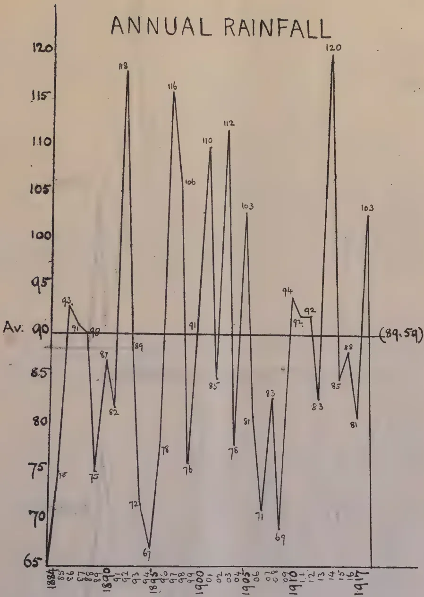
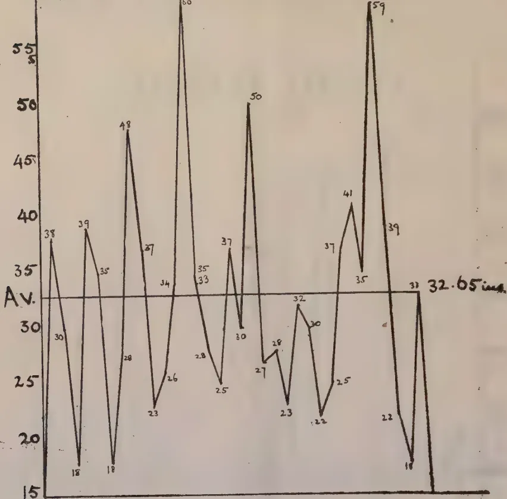
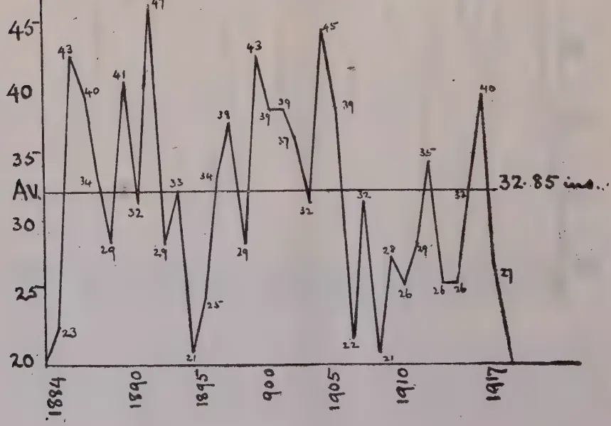
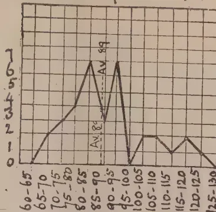
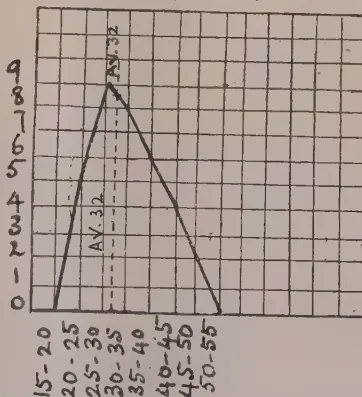
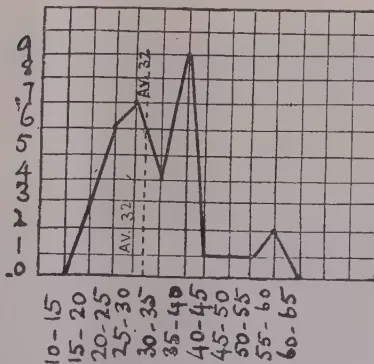
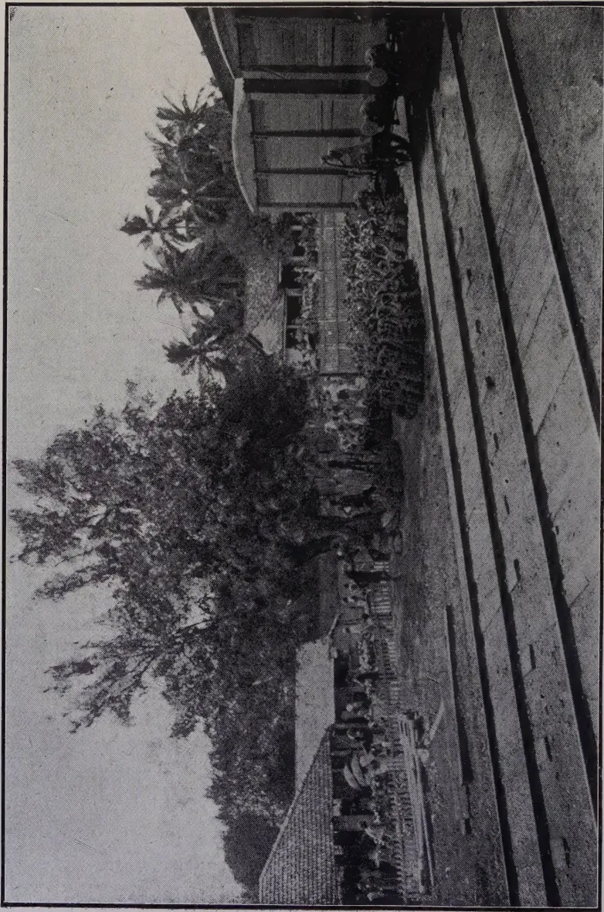

THE
TROPICAL AGRICULTURIST:
JOURNAL OF THE
CEYLON AGRICULTURAL SOCIETY.
VOL. LI.
PERADENIYA, AUGUST, 1918.
No. 2.
PADDY CULTIVATION.
Reference to the TROPICAL AGRICULTURIST during the past year shows the attention that has been given to the encouragement of the greater production of food-stuffs in the colony. The whole of the efforts of the Agricultural Society have been concentrated upon this work and the results as far as they have gone have been satisfactory.
It may be urged that too little attention has been given to the staple food of the colony, viz., paddy. This is obviously correct, but it was recognised at the outset that the quickest returns for labour expended on the important question of food production were likely to be obtained from encouraging the greater cultivation of such crops as pulses, manioc, sweet potatoes, maize, etc.
The cultivation of paddy in Ceylon is surrounded by the numerous customs of years and many of the economic factors are so complex that the closest investigation spread over a considerable period of time would be necessary before the situation was clearly and completely understood.
Customs in various parts of the country vary, the relationships between the landed proprietor and the worker or the tenant vary in the different districts, and the whole economies of the crop are complex.
It is not to be expected that a considerable and extensive increase in the area of paddy cultivation, except under the most extraordinarily critical circumstances, could be looked for. There
74[AUGUST, 1918.may be extensions in some areas, but in other places paddy lands are being devoted to other crops which are more profitable.
The financial returns from paddy cultivation are not high even when compared with the cultivation of other food products and do not as a rule give a fair return on the capital value of the land. This cannot be viewed with unconcern, and the fullest investigation into the whole question appears to be necessary.
The Agricultural Society has in past years carried out experiments, both cultural and manurial. The results of these experiments have shown that increased crops can be obtained from the use of manures and by means of transplanting. The Co-operative Credit Societies have in recent years been a means of popularising the value of manures, and the Department of Agriculture has undertaken experiments with selecting types of seed paddy. All these efforts assist in their particular directions, but the whole problem is a most complex one—bound up with the life's work of a great number of our population.
The question that has to be decided is whether the colony is to depend upon its neighbour, India, for its main food supply, or is it necessary for it to provide its own. If the colony is to endeavour to become a separate unit as far as its food supplies are concerned, then it has to be decided what forms of encouragement or subsidies will be necessary for the provision of a larger paddy industry.
There can be little doubt that after the termination of the War there will be an increased demand for the food-stuffs of the world and that prices will be high. It should therefore be considered whether or not Ceylon is to remain dependent upon its neighbour India—the house of cheap food.
At the moment large areas in India which formerly were devoted solely to food crops are now being planted with cotton and other crops of high export value. With the industrial development of India, now urged and encouraged by all, it is probable that the area under food crops may not expand in the same proportion as the increase in the population.
Ceylon must give a thought to these possibilities and decide what is to be done in connection with paddy cultivation.
AUGUST, 1918.]75Minutes of a meeting of the Committee of Agricultural Experiments held at the Experiment Station, Peradeniya, on July 11, 1918.
Present:—The Director of Agriculture (Chairman), the Botanist and Mycologist, the Superintendent of Botanic Gardens, the Government Chemist, the Acting Entomologist, the Superintendent of Low Country Products and School Gardens, MR. N. K. JARDINE (Special Entomologist), the Assistant Government Agent, Puttalam, the Hon'ble the Rural Member of the Legislative Council, the Chairman, Planters' Association of Ceylon, SIR SOLOMON D. BANDARANAIKE, MESSRS. R. G. COOMBE, T. Y. WRIGHT, E. W. KEITH, N. G. CAMPBELL, J. B. COLES, A. S. LONG-PRICE, J. S. PATTERSON, W. SINCLAIR, A. J. AUSTIN DICKSON, H. D. GARRICK, C. E. G. PANDITSEKERE, and A. W. BEVEN; and as visitors, MESSRS. R. S. VAILE (University of California), F. R. SHAND, H. WILKINSON, THOM. COLTHURST and LT.-COL. W. H. BIDDULPH.
The minutes of the last meeting were taken as read and confirmed.
The Chairman announced that telegrams and letters stating their inability to attend the meeting had been received from the Hon'ble the Government Agent, C. P., MUDALIYAR A. E. RAJAPAKSE, MESSRS. G. H. MASEFIELD, M. L. WILKINS, and LT.-COL. W. G. B. DICKSON.
The Chairman stated that Mr. G. H. GOLLEDGE had left the Colony and was recommended for indefinite leave from the Committee.
2. Progress Reports, Peradeniya.—The Chairman briefly reviewed the Progress Reports that had already been circulated. He stated that Indian acclimatized seeds of onions had given better results at Peradeniya than other imported seeds. Small areas had been planted out with new coffees raised from seed received from the Department of Agriculture, Java.
Anuradhapura.—The yields of paddy at the Dry Zone Station were very satisfactory, varying from 50 to 60 bushels per acre. A certain quantity of this seed will be distributed free of charge to the villagers round Anuradhapura for cultivation, whilst the balance will be offered for sale at Rs. 2'00 per bushel.
Maha-iluppalama.—The coconut experiments are being continued, pending the action of Government re lease or disposal of the Station.
Mr. N. G. CAMPBELL enquired whether chilli seed of the variety exhibited was available, and the Secretary replied that it was available at the Peradeniya Experiment Station. It was stated that 1 to 1½ lb. of seed would be required for an acre.
Plague Precautions.—The Chairman reviewed the statement placed on the table in regard to the Plague Precautions that had been taken at Gangaruwa, Stock Gardens, and the Botanic Gardens, Peradeniya. MR. COOMBE enquired whether any steps were taken to reduce the number of squirrels,
76[AUGUST, 1918.]and the Chairman stated that no shooting had been done recently owing to the enhanced cost of ammunition.
MR. GARRICK stated that coolies upon his estate had devised simple traps with lengths of bamboo and the result had been very satisfactory. He stated that the preparation of these simple traps locally solved one of the difficulties in the destruction of rats.
The Chairman tabled an advance copy of the Administration Report of the Department of Agriculture, and stated that copies would shortly be circulated to members. The following bulletins and leaflets of this Department were also laid on the table:—
Bulletins:—No. 36. Results of Rubber-Manuring Experiments, Experiment Station, Peradeniya, 1915-1917.
No. 37. Results of Tea Experiments, Experiment Station, Peradeniya, 1914-1917.
Leaflet No. 9. The application of preservatives to renewing bark of rubber.
3. Extension of Tea Experiments.—The Chairman announced that 5 acres of land would be available for planting in the North-east Monsoon and called for suggestions as to any special experiments desired.
The Government Chemist was of opinion that the same jât should be tried whether for manuring or plucking experiments, and he was supported by the Chairman of the Ceylon Planters' Association. It was thereupon decided to make enquiries from India re Dahootee Tea seed, and, if this was not obtainable, to plant the area with the dark leaved Manipuri jât from Kotiyagalla or Norwood.
MR. COOMBE suggested that an area might be planted in Tea at Hakgala for experiment. He thought that further experiments with tea were desirable. After discussion the question of opening an experimental area at Hakgala was left over for consideration and report by the official members of the Committee at the next meeting.
4. Cultivation of Castor outside Tea Growing area.—The Chairman stated that Government was desirous of encouraging the cultivation of castor outside the tea growing area. In 1904 MR. HERBERT WRIGHT, the then Controller of the Peradeniya Experiment Station, had carried out experiments both in planting of castor and oil extraction. A village press had recently been tried and the oil obtained was 20 per cent. by the cold-drawn process. Experiments in 1914 in Colombo yielded about 33% of oil with larger presses. Consideration was at the present time being given to the question of a seed purchasing scheme and of securing crushing facilities.
MR. PANDITESEKERE enquired with regard to diseases of the plant, and the Chairman stated that it was attacked by a caterpillar and an aphid. The Government Chemist stated that castor stood drought and grew well in the North Central Province, and came into bearing at 7 to 9 months. The Assistant Government Agent, Puttalam, made certain enquiries as to its suitability for cultivation in the Puttalam and Chilaw districts.
5. Rubber Experiments, Peradeniya.—The Botanist and Mycologist explained that some of the tapping experiments had run their course. He stated that in the rubber tapping experiments on time intervals, the original bark was not finished on the rows tapped three times a week and twice a week respectively. The renewed bark in the one case was six years old
AUGUST, 1918.]77and that in the other four years old. As it had been shown that the yield of rubber varied with the age of the renewed bark, it would not be possible to continue the tapping on renewed bark of different ages. It was agreed that this experiment should be stopped.
6. Rubber Research.—The Chairman laid on the table papers re co-ordination of Rubber Research in Ceylon, and gave a brief review of the suggested co-ordination between the Rubber Research work of the Department of Agriculture, the Ceylon Rubber Research Scheme and the Rubber Growers Association. The various bulletins issued by MR. CAMPBELL and by the Imperial Institute under the Ceylon Rubber Research Scheme would soon be available in book form.
7. Potash Content of Coconut Husks.—MR. A. W. BEVEN stated that small owners were disposing of their coconut husks for potash manufacture, and this resulted in great damage to their plantations. He drew the attention of the Committee to MUDALIYAR RAJAPAKSE's address on this subject before the Low Country Products Association, and suggested that this might be published in the TROPICAL AGRICULTURIST and issued in the vernaculars.
SIR SOLOMON DIAS BANDARANAIKE stated that small land-owners did not realize or appreciate the great value of husks, and that he thought that if the chief headmen should explain to them their manurial value, it would be possible to check their sale.
It was resolved to secure a copy of MUDALIYAR RAJAPAKSE's address on the manurial value of coconuts and to publish it in the TROPICAL AGRICULTURIST. The Chairman pointed out that Government could not interfere with the individual business transactions of growers of coconuts. All that could be done was to publish the analytical value of the waste coconut products.
8. Coconut Diseases at Kurunegala.—At the request of MR. PATTERSON the Botanist and Mycologist gave further details of the coconut diseases in the Kurunegala district and exhibited photographs showing palms affected with leaf droop. He also showed specimens of a leaf disease which attacked the leaflets, usually in a group of half-a-dozen on one side of the mid-rib (branch), passing into the branch and gradually killing it down to the base. When the part attacked is near the end of the leaf (branch), the leaf frequently breaks at the point first diseased, and the terminal portion hangs down. The disease appears to be the same as the "Leaf break" reported from the Federated Malay States. The diseased patch on the midrib is at first dark-brown, usually zoned at the margin. Ultimately the midrib becomes entirely dark-brown, or almost black. MR. PATTERSON stated that these coconut diseases were a serious menace to the industry around Kurunegala and he hoped that a thorough investigation would be made. The diseases appeared to be more prevalent in the wetter districts. It was agreed to await further investigations by the Botanist and Mycologist.
9. Regulations re Bud Rot diseases of Coconuts.—The Chairman tabled copy of suggested schedules under the Plant Pests Ordinance, for the Bud Rot disease of coconuts. These were unanimously adopted.
10. The meeting then terminated with the usual vote of thanks to the Chair.
11. After the meeting the members visited the Rubber plots under manurial and tapping experiments at the Peradeniya Experiment Station. A typical example of Brown Bast disease which had been recently observed on the Experiment Station was shown by the Botanist and Mycologist. Members also visited the plots in which Leucaena glauca and Dhall (Cajanus indicus) were being used for green manure. The growth of Dhall has been very heavy and its use as a green manure for rubber would appear to be worthy of recommendation.
78[AUGUST, 1918.FROM 1ST MAY TO 30TH JUNE, 1918.
The yield for the month of May was 3,174 lb. green leaf from 11 acres, or 271 lb. in excess of that of the previous month; that for June 4,563 lb. or 1,389 lb. in excess of that for May. The March-April made tea fetched in Colombo an average of 43 cents. per lb. for all grades.
The rate for manufacture of tea has been raised from 1st July to 12½ cents. per lb., ½ cent more than the previous rate.
Plots 141-143, and 146-148 which were divided into half acres were manured with the various mixtures applied last year. The manures were applied up alternate lines and lightly forked in.
Vacancies in the two acres of Huldubari Dooars tea have been supplied with stumps kindly presented by Mr. G. H. MASEFIELD. There are still a few vacancies and these are being supplied.
The crop of sword bean sown as a green manure is being harvested. 253 lb. of clean large beans have up to date been collected.
The jungle between the new plots of tea and Hill-top rubber has been cleared and timber removed. It is proposed to plant a crop of sword beans, until the area is put into tea, with the first rains in October.
Plot 86, Row B and certain trees in 86 C, 87 A.B.C.D. & E. were uprooted in May—the selection being made by the Director of Agriculture, the Botanist and Mycologist and the Agricultural Chemist.
Plot 76 C, Section I, previously tapped at a , one cut at 15 inches, on alternate days, having been completed a new section has been started from the first of July.
Plot 82 B, Sections I, II and III (Tapping on renewed bark) single cut on rd, at 15 inches, alternate days, started in July 1916, has been completed.
The 20 trees in the old tea plots which were tapped commencing from July 1916 at rd, one cut at 15 inches, on alternate days, having been completed, a new section has been started.
The two young plantations have been supplied with stumps from our own nurseries.
The work of putting up short contour walls on the Hill-top rubber is being continued.
Applications of Brunolinum to the newly tapped surfaces have been recommenced from the 1st of June.
The Hill-top plantation has been supplied with Tephrosia candida.
The trees, in spite of their drastic pruning, are bearing what is likely to prove a heavy spring crop. The removal of suckers has been continued.
The stalks of the cacao and dadap prunings left strewn about after pruning the plots are being collected and removed.
AUGUST, 1918.]79Seeds of specially selected Forastero pods have been planted in bamboo pots for obtaining grafted plants for the proposed Economic Section.
The ten-acre plot of coconuts at the Gatembe end has been remanured.
Supplies have been planted out along the river bank.
A nursery of the large Java nuts has been planted out.
There has been no sale held since the last meeting, nuts being still sold at the rate of Rs. 21.50 per 1,000.
A row each of the following strains of coffee received from the Department of Agriculture, Java, has been planted out 10 ft. × 10 ft. in the plot behind the store :—
| Excelsa ... | ... | No. 121 | 05 | Garden No. 126 |
| " ... | ... | 121 | 08 | 126 |
| Liberia Pasir Pogor... | 144 | |||
| Abeocuta ... | ... | ZZ | 116 | |
| Laurentii ... | ... | 3 | 01 | 92 |
| Uganda ... | ... | 5 | 120 | |
| Robusta ... | ... | 83 | 242 | |
| " ... | ... | 105 | 217 | |
| Quillou ... | ... | 89 | 03 | 111 |
| Canephora Wonosari | 1 | 03 | 73 |
The old Ceara plot adjoining the Robusta coffee has been planted out with Leucaena glauca seed 10 ft. × 10 ft. in preparation for coffee. The seeds have germinated well.
The dadap and Leucaena shade over the coffee has been pruned and mulched round the plants.
All suckers have been regularly removed.
Orders for seeds and plants continue to come in.
A leaflet on coffee cultivation is in the press, and will be issued shortly.
A rice-hulling machine sent by the Ceylon Agricultural Society has been erected for further experimental trials.
Small plots are being planted with the following varieties of hill paddies recently collected by Agricultural Instructors :—
| Variety. | District. | Age. |
|---|---|---|
| Kahayal ... | Sabaragamuwa | 6 months |
| Kahavi ... | " | 7 " |
| Ratdel ... | " | 6 " |
| Kahatanayal ... | " | 7 " |
| Baladayal ... | " | 5 " |
| Bibili el ... | " | 5 " |
| Kiritanayal ... | " | 6 " |
| Polayal ... | " | 4 " |
| Mookaladahayal ... | " | 7 " |
| Dandumara El ... | Ratnapura | 5 " |
| Elvi ... | Kegalle | 7 " |
| Variety. | District. | Age. | |
|---|---|---|---|
| Elvi | ... | Kegalle | 5 months |
| Ratu el-vi | ... | " | 6 " |
| Elvi | ... | Walapane | — — |
| Elvi ( Weuda-wili-hatpattu ) | ... | — | 7 months |
| Pokuru-vi | ... | — | 7 " |
| Elvi ( balavi ) | ... | Kegalle | 5 " |
| Chenadi | ... | Jaffna ( N.P. ) | — — |
| Morungun | ... | " | — — |
| Mada el | ... | Western Province | 4 months |
| Pola el | ... | " | 4 " |
| " | ... | Ratnapura | 4 " |
| Mookaladaha el | ... | " | 6 " |
| Bibili el | ... | " | 6 " |
| Baladaha el | ... | " | 5 " |
| Dahayal | ... | Hinidum pattu | 4 " |
| Koseta-vi | ... | Wellassa ( Uva. ) | 4 " |
| Goda el | ... | " | 4 " |
| Chitrakal | ... | " | 5 " |
| Batu del | ... | " | 4 " |
| Muttusamba | ... | " | 5 " |
| Mudu kiriel | ... | " | 4 " |
| Malwariya | ... | " | 5 " |
The results of further trials with onions and chillies have been as follows :—
| Variety. | Acreage sown. | Date of Sowing & Planting. | Distance. | When harvested. | Yield. | Yield calculated to the acre. |
|---|---|---|---|---|---|---|
| Onions (Acclimatised) seed |
1/16th | 4-12-17 | In drills 6 inches apart. |
20-6-18 | 61 lb. of fresh onion bulbs. |
976 lb. |
| Onion (Giant Spanish) |
" | " | " | 19-6-18 | 36 " | 576 lb. |
| Onion (Giant red country) |
" | " | " | 19-6-18 | 32 " | 512 lb. |
Chillies. Seed from Dry Zone Station, Anuradhapura—seeds were sown in a nursery and transplanted. The crop is being harvested.
| Acreage sown | ... | ... | of an acre |
| Date of sowing and transplanting | ... | ... | 4-12-17—12-1-1918 |
| Quantity sown | ... | ... | 1 lb. transplant |
| Distance | ... | ... | 18 inch apart |
| When started harvesting | ... | ... | 11-6-1918 |
| Yield to date... | ... | ... | 109 lb. ripe chillies equal to 45 lb. dry chillies |
Remarks. The growth is healthy and vigorous. A dressing of cattle manure was given when preparing the beds. A sample of the chillies will be exhibited.
The curry-stuff plots are again being prepared for planting, with seed obtained from the last crop.
The dhall plots are making a remarkable growth, the plants attaining a height of 10 to 12 feet.
The vacancies caused by wild pig in the Cassava and Sugar cane plots have been supplied, and a wire fence erected around the plots.
Vanilla. The hand-fertilised flowers have set very well and the pods look healthy.
Indigo. Seeds of Indigofera arrecta were planted in the open space in rubber plots 14 and 15.
Green Manures. The show plots round the office are making good growth. Tephrosia Vogelii planted on the 10th January last was cut for the first time on 24th June, and gave 241 lb. of green material. This variety had never been pruned before, and it remains to be seen whether it will stand cutting.
Fruit Plots. Two plants each of the following grafted mangos received from the Ceylon Agricultural Society, have been planted :—Alphonso, Gundu and Bangaloora.
The plot of land behind the Students' Plots is being cleared of old cacao and coconuts for the new Economic Section.
MR. R. A. SENIOR-WHITE of Suduganga Estate, Matale, has kindly presented 56 seedlings of Coffea Arabica in bamboos raised from seed from two bushes which survived the coffee disaster and appears to be comparatively free from leaf disease and green bug.
Plague Precautions. On instructions received from the Director of Agriculture, steps were taken to free all bungalows, stores, and coolies lines of all rats. The stores were systematically poisoned with Rough-on-rats, and traps were set in all buildings. The total number of rats killed from the 17th May to the end of June was 176. The coolies lines have been cleared of surplus overgrowth, rubbish, etc., and the labour force is under proper control, no coolies being allowed to come into or leave the station without permission. A weekly inspection of all coolies lines is being made.
Visitors. 44 visitors have been conducted round the station since my last report.
| Inches. | Rainy Days. | |
|---|---|---|
| May | 13.33 | 16 |
| June | 10.04 | 17 |
H. A. DEUTROM,
Acting Manager, Experiment Station, Peradeniya.
Peradeniya, 4th July, 1918.
82[AUGUST, 1918.FROM 1ST MAY TO 30TH JUNE, 1918.
The Director of Agriculture and the Government Agricultural Chemist inspected the Station on the 14th June, 1918. The Acting Manager has made two visits since the last report.
The following is the result of the first paddy experiment initiated at Anuradhapura, to test the yield and general qualities of the imported paddies, and paddy as grown in the North-Central Province. Most of the crops appear to be well above the local average as regards yields. The results are distinctly encouraging and the trials were watched by many villagers around the Station. All the varieties were transplanted with single seedlings 6 inches apart.
| Name of variety. | Date of sowing in nursery. | Date of flowering. | Date of harvesting. | Yield per acre. | |
|---|---|---|---|---|---|
| Paddy Buls. | Straw lb. | ||||
| (a) Molagu Samba ... | 25'10'17 | 30'1'18 | 12'3'18 | 62 | 3315 |
| (b) Philippine Paddy ... | 25'10'17 | 4'2'18 | 8'3'18 | 61 | 3291 |
| (c) Dr. Lock's Hathial (C.P.) ... | 25'10'17 | 24'1'18 | 4'3'18 | 56 | 3713 |
| (d) Thillanayam (N.C.P.) ... | 10'11'17 | 14'2'18 | 24'3'18 | 55 | 2186 |
| (e) Maccan Pina Manila ... | 25'10'17 | 24'1'18 | 14'3'18 | 50 | 2181 |
(a) Molagu Samba. This variety possessed a tall vigorous growth bearing large heads of fine seed and as many as 20-25 stalks to a stool.
(b) Philippine Paddy. Medium sized round grain containing very white rice—straw short. This should prove suitable for the consumption of Estate coolies.
(c) Dr. Lock's Hathial. Produced an exceedingly good growth, and yielded more straw than any other variety.
(d) Thillanayam. This is the local variety, grain dark brown. Grew well throwing out from 15 to 30 shoots each. Maturity was reached in 5 months.
(e) Maccan Pina Manila. This paddy attained a height of 5 feet and ears were 10 inches in length.
This seed paddy is available for sale at Rs. 2'00 per bushel, F.O.R. Peradeniya. Some will be distributed free to villagers around Anuradhapura.
The poor patches of land in the paddy plots where the levelling necessitated the removal of the surface soil to fill in the lower portions, have received special attention. These should recover in time after cultivation and green manuring.
The fields have now been sown with Crotalaria juncea (Sunn hemp) and chillies until the next Maha crop.
It is proposed to extend the cultivation of paddy, and the plot adjoining the present fields—about 3 acres in extent—is being freed of stumps, levelled, and the undergrowth burnt.
August, 1918.]83The whole of the jungle up to the Railway line, except the portion set aside as an Archæological reservation, has been felled and burnt, the valuable timber trees being removed by the Forest Department. All the available labour is now engaged in removing small stumps, filling up depressions, and weeding the land for planting limes in the North-east Monsoon. Arrangements have been made to have the land surveyed and divided into acre blocks.
The severe drought had adversely affected the smaller plants of Mauritius hemp. Many have died out completely. It is proposed to supply the vacancies with larger plants during the North-east Monsoon.
The gingelly sown in the new clearing is making very satisfactory growth.
A lemon plant was affected by disease, and a specimen was sent to the Mycologist who reports as follows :—
"Lemon branches from Experiment Station, Anuradhapura, are attacked by the disease known as Citrus canker. It would be best to uproot and burn this tree. If any of the branches have large wounds on them, I should be glad to have them."
The following crops have been planted :—Several varieties of sweet potatoes, green and black gram, manioc, and Jaffna yams.
Vacancies in the 3-acre plot and bungalow plot of coconuts have all been supplied with plants from Peradeniya.
The main irrigation channel has been cleared of fallen branches and all plots, canals, drains, and paths have been cleaned and weeded.
24 visitors were shown round the Station.
H. A. DEUTROM,
Acting Manager, Dry Zone Experiment Station.
Peradeniya, 4th July, 1918.
This Show, organized under the auspices of the Adikaripattu Co-operative Credit Society, was held at the Wewita Government Boys' School on the 29th June. MR. F. A. STOCKDALE, Director of Agriculture, in the absence of the Assistant Government Agent, declared the Show open.
GATE MUDALIYAR J. A. WIRASINGHE, President of the Co-operative Credit Society, who initiated the Show was unavoidably kept away owing to illness. Thanks are due to MR. WICKRAMANAYAKE, Mohandiram and acting Mudaliyar for the interest he took in bringing the Show to a success, and also to MR. D. A. G. KANNANGARA, Secretary of the Society.
Fruits.—Following were some of the fruits shown :—Oranges, mandarins, pineapples (Kew and Mauritius), papaw, pomegranates, soursop, nam-nam, kamaranga and lovi-lovi. Table plantains were very poor and there was only one exhibit.
Vegetables.—Brinjal, bandakka, cucumber, snake gourd, mé beans, radish, chillies and breadfruit were fine. Curry plantains made a very poor show.
Yams.—There was a good show of cassava; other tuberous crops shown were :—Arrowroot, sweet potato, rata kondol, hingurala, and gahala.
84[AUGUST, 1918.Cereals and Pulses.—Good specimens of dhall, green gram, menèri, kurukkan, amu and maize were exhibited. There were not many exhibits of paddy and rice.
Curry-stuffs.—Onion, ginger, turmeric, pepper and mustard were very good. A few exhibits of cinnamon were also shown.
Other products.—There was a good show of coconuts, betel and sugar-cane.
Prepared products consisted of oils—coconut, king coconut and gingly. Cow and buffalo ghee were shown, but not up to the standard. There was one exhibit of bee-honey. Other exhibits shown were coconut and kitul treacle, kitul jaggery and curd.
In the Industrial section some fine specimens of mats were exhibited. There were also a few Kalutara baskets and betel pouches. Flower pots, tiles and bricks were shown by one exhibitor only. There were also a few good pieces of needlework.
Poultry Section.—There were only a few birds exhibited in this section.
The following officers of the Agricultural Department in addition to the Director of Agriculture were present at the show and assisted in the judging:—MESSRS. C. DRIEBERG, Superintendent of Low-country Products and School Gardens; N. WICKRAMARATNE, Secretary, Board of Control, Co-operative Credit Societies, and the writer.
L. DE Z. JAYATILLEKE,
Agricultural Instructor, W. P.
The following is the result of the experiment carried out by MR. P. B. M. BANDARANAYAKE, Ratemahatmeya of Bintenne:—
Centre. { District: Batticaloa.
Village: Mahaoya.
How reached: Cart road.
Nature and object of Experiment: Demonstration of improved methods of cultivation, e.g., tillage, weeding, transplanting and irrigation.
Extent: 2 acres.
Date. { Sown: 10th January, 1918.
Transplanted: 30th January, 1918,
Harvested: 10th May, 1918.
Nature of Soil: Sandy loam—an abandoned paddy land—under Mahaoya tank.
Cost of Experiment: Rs. 125.
Pests and Diseases: Paddy bugs, paddy birds and wild pigs.
General reports on the growth: The growth was very satisfactory, and the yield should have been much better if not for the drought that prevailed at the time, and also for the above pests.
Yield of the plot: 125 bushels.
Yield per acre: bushels.
AUGUST, 1918 ]85Burma is, like Ceylon, a country in which rice is the staple food. This needs to be supplemented with some nitrogenous food, hence the importance of pulses known as Dhall (Cajanus indicus Spreng, Sinhalese "Parippu" or "Rata-tora") and Green Gram (Phaseolus Max L., Sinhalese. "Mun-eta"), large quantities of which are imported from India. P. Max L. is the only widely distributed pulse grown as a "field-crop" in Ceylon. The rest of the pulses and beans are grown here and there in small patches as "garden-crops." The efforts to increase our local food-supplies have brought prominently forward the suitability of Dhall to our conditions and we may look forward to the extension of the cultivation of this pulse in Ceylon.
It is not so well known that in Burma the commonest pulse grown as a field-crop is not any of these two pulses, as is the case in the rest of India, but what we know as the Lima Bean (Phaseolus lunatus L.).
The varieties of this bean most favoured by Burmese cultivators are Pegya known in commerce as the "Rangoon Red Bean" and Pebyugale that goes under the name of the "Rangoon White Bean." The Lab-lab Bean (Dolichos lab-lab L.) may also be often shipped from Rangoon as "Rangoon White beans."
The Lima Bean is not much favoured in Ceylon and in India. This the writer is inclined to believe to be due to the fact that it has been introduced and grown as a "garden-crop" thus entering into competition with the Vignas and esculent varieties of Dolichos spp. The Lima Bean should find a place in Ceylon as a substitute for such pulses as dhall and green gram and, if grown as in Burma extensively as a "field crop," there is no doubt that it has a distinct economic future—witness the demand for Rangoon beans in the commercial world—an increasing demand that Burma cannot meet and which just now is acute and likely to remain so even for some time after the war is over.
There are many other beans that are shipped from Rangoon but the "Rangoon White Bean" (pebyugale) remains the "premier Burmese bean."
The white types of Lima bean are to be favoured because they are almost if not wholly devoid of prussic-acid forming glucosides. About this a good deal has been written; it must be remembered that in Burma large quantities of these beans are consumed but no fatalities are reported to occur—a fact that affords conclusive evidence to their harmlessness when eaten boiled or parched, however dangerous they may be in the raw state.
These poisonous glucosides are found chiefly in "Pegya"—the red types of the Lima Bean—and investigations which are still in progress tend to show
86[AUGUST, 1918.that their formation is influenced by weather conditions that prevail during the season of cultivation of the bean (Annual Report, 1917).
This extract taken from THOMPSTONE and SAWYER'S The Peas and Beans of Burma (Bull. No. 12 of 1914, Dept. of Agric., Burma) will show the time and method of cultivation in Burma:—
"In the hills the beans are frequently sown at the beginning of the rains, or in Yas from September to January. In the plains they are most generally sown from August to December and reaped from February to April. On islands and flooded areas along rivers they are sown after the floods subside, i.e. from September to December. They are generally sown by dropping the seeds, at the rate of about half a basket [i.e. about 35 lb. H. L. VAN B.] in furrows made by the plough. This method results in the plants growing more or less in rows 1 to feet apart. Frequently, however, the seed is scattered and harrowed in or it is sown broadcast, mixed with maize, at the rate of about half a basket.....to of a basket of maize per acre. The maize affords support for the climbing beans. If sown alone, about basket is scattered per acre. One or two weedings are generally given but the crop trails over the ground, grows thickly and, to a large extent, suppresses the smaller weeds. The crop generally takes about five months to come to maturity and is then reaped with the tazin (sickle) and threshed by bullocks in the ordinary way."
The Rangoon bean is not so large and plump as the true Lima bean introduced into Ceylon. Attempts have been made by the Agricultural Department of Burma to import and acclimatise the larger and plumper varieties of Lima bean but the Annual Report for 1917 shows how the length, breadth, thickness and weight of the bean gradually decreases when cultivated for a number of years in Burma.
The Rangoon bean is said to prefer a clayey to a sandy loam and is grown more extensively in the drier districts of Central Burma. In Lower Burma and the hill tracts the yields are not very good and it is not grown to any extent. The bean does not do well on stiff clay soils in the rainy season but the Annual Report for 1917 suggests that it is likely to do well as a cold weather crop. The yield under favourable conditions may be over 1,400 lb. per acre, this is estimated in Burma to give a gross outturn of Rs 90/-. The cost of cultivating the crop is only about Rs 8/- per acre. "Pebyugyi," known also as the "Madagascar bean," is a large white-seed variety of P. lunatus L. The yields are poor being about 680 lb. per acre (Annual Report, 1917) thus it cannot compare with "Pebyugala."
In Burma there is a sub-station established close to the Mandalay Agricultural station with the special object of conducting investigations with Phaseolus lunatus. The Assistant Botanist is also attempting to isolate pure strains of the Rangoon White Bean that give high yields together with a uniform size and shape of bean. The unevenness of size and shape necessitates expensive grading by laborious hand-picking and is a cause of low prices to the grower. In Burma, brokers buy the crop who consign to Rangoon from which part the beans are sent to Europe and elsewhere.
HENRY L. VAN BUUREN.
AUGUST, 1918.]87(Continued from page 39).
W. D. KERLE.
Assistant Inspector of Agriculture, and Experimentalist, Hawkesbury Agricultural College.
The statistics of peanut production in the United States of America show a total annual yield of approximately million bushels. The average obtained per acre is in the vicinity of 34 bushels. American writers consider that good peanut land, properly prepared and fertilised and under a good system of rotation, should produce in a normal season a yield of 50 bushels of nuts per acre, and from 1 to 2 tons of hay. Although yields of 100 bushels are not uncommon, a 70 bushel crop is regarded as high, and is estimated to give a net return of £15 to £20 per acre.
In view of these figures, the yields obtained in the trials conducted at the Departmental experiment farms afford a striking contrast, and emphasise the potentialities of the industry in this State. The highest recorded yields at Grafton Experiment Farm are bushels of Virginia Bunch, 121 bushels of Spanish, and bushels of Valencia, with an average yield for three years of all varieties of nearly 100 bushels. At Yanco Experiment Farm bushels of Local, bushels of Valencia, and 84 bushels of Spanish are the highest yields recorded, with an average almost equal to Grafton. Even at Hawkesbury Agricultural College, where the climatic conditions are anything but suitable, a yield of bushels has been obtained with Valencia. Exceptional yields of hay have also been obtained, notably tons at Yanco Experiment Farm and tons at Grafton Experiment Farm, both from Valencia. These returns are not to be regarded as exceptionally high, since in no instance was artificial fertilisers applied. With careful field selection of seed, judicious application of fertilisers, and improved methods of harvesting, it is safe to assume that the yields could be appreciably increased.
Probably the very limited area of peanuts grown in the State is accountable for the absence of any serious diseases. An insignificant attack of a leaf-spot fungus (probably Cercospora personata) has been noticed. It is a fungus which attacks the leaves, particularly during the early stages of growth, in wet seasons, appearing as small, yellowish-brown spots. The disease has not been of a general nature, but confined to low-lying portions of the field. No falling-off in yield has been attributed to the disease, although if it were more general that effect would undoubtedly follow, as well as a considerable decrease in the value of the vines for hay.
Considerable damage has been done to the peanut crop in India,* Java, and German East Africa by a fungus disease, Septoglæum arachidis. It attacks the leaves and stems, being indicated by brown spots surrounded by yellow rims, and causing the leaves to wither and fall off. Undeveloped and hollow pods result, with an inevitable and serious falling-off in yield.
Fungus diseases of the above nature can be controlled by spraying with Bordeaux mixture.
* BUL. No. 41, DEPT. OF AGR., BOMBAY.
88[AUGUST, 1918.No attacks by insects on the peanut plant have as yet been recorded in Australia. Injurious insects may be classified with respect to the peanut as those attacking (1) the growing plant and (2) the nuts in storage.
In view of the probable development of the peanut industry in Australia, a review of the insects found injurious in other countries may be of interest since the depredations of insects usually extend with increased production.
In the United States* a species of aphid has been reported as attacking the roots of the plant. No great damage has been done by these pests, but their spread is very likely.
Various insects have also been found doing considerable damage to the stored nuts. LEFROY † gives the peanut as a food plant in India of the hairy caterpillar (Prodenia litura Fabr.). It is a serious pest which, feeding on the leaves, completely skeletonizes them, in time destroying the entire crop if not checked.
From Nigeria ‡ are reported attacks of a more or less serious nature by psychid caterpillars (Metisa sierricola White) and a scale insect (Ceronema africana Macfie).
The peanut is one of the chief sources of wealth in the French colony of Senegal.§ There the growing nuts are attacked by termites and by the larvæ of an elaterid beetle. These pests pierce the shell, providing breeding facilities for storage insects, and often eating away the entire nut. Stored nuts and meal are attacked by various insects, particularly the larvæ of the pyralid moth (Plodia interpunctella), the tenebrionid beetle (Tribolium confusum), and the saw-tooth grain beetle (Silvanus surinamensis).
In France ¶ and also in Senegal, the larvæ of a number of Misrolepiptera, the commonest species of which is Ephestia elutella, have been reported as infesting peanut meal in storage, and doing considerable damage.
BALLOU § reports from St. Vincent, Barbados, attacks of the pentatomid bug (Edessa medilabunda), and also of other bugs, caterpillars and mole crickets.
From Russia ¶, VASSILIER records the attack of a leaf-mining insect (Phytomyza goniculata) Macq.).
From the foregoing it will be observed that the peanut is prone to the attack of numerous insects, some, if not all, of which may make their appearance in Australia when the crop comes to be more generally grown. Parasites and predaceous enemies play an important part in the natural control of insect pests, but if remedial measures have to be resorted to, spraying with intestinal poisons, such as arsenate of lead, Paris green, etc., for leaf-eating insects, fumigating with carbon bisulphide for nuts attacked in storage, and systematic crop rotation for insects and disease attacking the nuts underground can be recommended.
* FARMERS' BULL. 431, U. S. DEPT. OF AGR.
† THE REVIEW OF APPLIED ENTOMOLOGY. VOL. 1, P. 482.
‡ BULL. ENTOM. RESEARCH, LONDON, Y, PT. 3. DEC., 1914.
§ LES INSECTES PARASITES DES ARACHIDES AU SENEGAL:—AZEMARD
¶ BUL. SOC. ETUDE VULG. ZOOL. AGRIC., BORDEAUX:—KEHRIG.
§ REPORT AGRIC. DEPT., ST. VINCENT, FOR 1912-13, BARBADOS.
¶, HORTICULTURIST AND MARKET GARDENER, KEW, FEB., 1914.
AUGUST, 1918.]89COMPOSITION.From the point of view of chemical composition the peanut appears to be one of the most desirable of farm crops.
The accompanying tables, compiled from American data, show the composition of the peanut plant from the standpoint of feeding and fertiliser value, and afford a comparison with other standard crops.
I.—TABLE of Food Constituents in various portions of the Peanut plant.*| Water. | In water-free substance. | ||||||
|---|---|---|---|---|---|---|---|
| Fat. | Protein. | Nitrogen. | Nitrogen-free extract | Ash. | Fibre. | ||
| Kernels ... .. | 7.85 | 49.20 | 29.47 | 4.67 | 14.27 | 2.77 | 4.29 |
| Hulls... .. | 12.94 | 2.68 | 7.22 | 1.77 | 19.42 | 3.39 | 67.29 |
| Leaves ... .. | ... | 3.50 | 10.00 | 1.60 | 54.09 | 10.90 | 21.51 |
| Roots ... .. | 28.74 | 3.20 | 7.63 | 1.22 | 31.00 | 9.54 | 48.59 |
| Stems ... .. | ... | 2.50 | 6.25 | 1.00 | 49.49 | 8.80 | 32.95 |
| Vines (mature)... .. | 31.91 | 5.02 | 10.81 | 1.73 | 39.81 | 12.08 | 32.28 |
| Vines (hay) ... .. | 7.83 | 1.84 | 11.75 | 1.88 | 46.95 | 17.04 | 22.11 |
| Feeding Stuffs. | Digestible Nutrients, per cent. | Average digestibility | ||||||
|---|---|---|---|---|---|---|---|---|
| Protein. | Carbohydrates. | Fats. | Dry matter per cent | Protein per cent | Carbohydrates. | Fat per cent | ||
| Fibre per cent | Nitrogen-free extract per cent | |||||||
| Peanut cake ... | 42.8 | 20.4 | 7.2 | 83 | 90 | 9 | 84 | 90 |
| " kernels ... | 25.1 | 13.7 | 35.6 | 83 | 90 | 9 | 84 | 90 |
| Coconut cake ... | 15.4 | 41.2 | 10.7 | 80 | 78 | 63 | 83 | 97 |
| Wheat bran ... | 11.9 | 42.0 | 2.5 | 66 | 77 | 41 | 71 | 63 |
| Linseed meal ... | 31.5 | 35.7 | 2.4 | 82 | 84 | 74 | 80 | 89 |
| Corn meal ... | 6.1 | 64.3 | 3.5 | 88 | 66 | ... | 92 | 91 |
| Water. | Ash. | Crude Protein. | Carbohydrates | Fat. | ||
|---|---|---|---|---|---|---|
| Fibre. | Nitrogen-free extract. | |||||
| Peanut vines without nuts ... | 7.6 | 10.8 | 10.7 | 23.6 | 42.7 | 4.6 |
| " with nuts ... | 6.3 | 6.0 | 13.5 | 29.2 | 36.3 | 15.1 |
| Lucerne hay... .. | 8.1 | 8.8 | 14.6 | 28.9 | 37.4 | 2.1 |
| Clover " ... .. | 9.6 | 8.6 | 15.2 | 27.2 | 36.3 | 2.8 |
| Cowpea " ... .. | 10.5 | 8.9 | 14.2 | 21.2 | 42.6 | 2.6 |
| Wheaten " ... .. | 9.6 | 4.2 | 3.4 | 38.1 | 43.4 | 1.3 |
| Oaten " ... .. | 9.2 | 5.1 | 4.0 | 37.0 | 42.4 | 2.3 |
IV.—TABLE of Fertilising Constituents in various portions of the Peanut Plant.*
| In air-dried substance. | ||||||
|---|---|---|---|---|---|---|
| Water. | Nitrogen | Phosphoric Acid. | Potash. | Lime. | Total Ash. | |
| Kernel ... .. | 6.30 | 4.51 | 1.24 | 1.27 | 0.13 | 3.20 |
| Vines (cured) ... .. | 7.83 | 1.76 | 0.29 | 0.98 | 2.08 | 15.70 |
| Hulls ... .. | 10.60 | 1.14 | 0.17 | 0.95 | 0.81 | 3.00 |
These analyses afford very convincing evidence of the value of the peanut. The kernels are rich in protein, fat, and carbohydrates, while the vines, converted into hay, are only slightly inferior to that from clover and lucerne. The hulls, too, appear to possess some feeding value, and are used for adulterating feeding stuffs, and in some countries as a coarse fodder. Peanut meal, which is the ground residue from oil extraction, is a highly concentrated material used extensively for stock feed. It is exceptionally rich in protein, and for feeding purposes compares favourably with linseed meal, coconut oil cake, and most concentrated foods.
The proteins of the peanut, arachin and conarachin, contain 18.29 per cent. of nitrogen. Conarachin, moreover, contains 6.55 per cent. of its nitrogen as basic amino acids. This is the highest recorded percentage of basic nitrogen in any seed protein. Peanut meal or cake may therefore prove very effective in supplementing cattle food products made from cereals and other seeds, the proteids of which are deficient in basic amino acids.†
The peanut, in common with all leguminous crops, is rich in nitrogen, and contains considerable quantities of potash, phosphoric acid, and lime. The nitrogen is almost wholly extracted from the air, and its application is therefore unnecessary, but commercial fertilisers may be used to supply the crop's needs in other essential plant food elements.—AGRICULTURAL GAZETTE OF N. S. W.
(To be continued).
No vegetable has become so fashionable as the tomato and we are told it is one of the most healthful that can be used. To be able to grow it well therefore, must be a desire of every gardener. The plant grows wild in Jamaica and needs in its wild state little or no care. There is no crop that I know so much repays careful cultivation as the Tomato. The seeds should be sown in boxes and transplanted when about four inches high. Some planters say that they should be transplanted twice as they give better results, and I have proved this to be correct, but there is not always time for this. They should be set out 18 inches apart in very rich trenches manured with stable manure with lots of litter in it. Place a stick six feet high to each plant, tie the plant to the stick and continue to tie about every foot up, remove all branches and off-shoots the plant puts out. You will soon find that at every alternate leaf but one, flowers will come and bear large tomatoes in bunches of from 6 to 9. The best varieties are Crimson cushion, Ponderosa, Stone.—JAMAICA AGR. SOC. JOUR. Vol. XXI. No. 12.
* ENCYCLOPÆDIA OF AGRICULTURE.—BAILEY.
† J. BIOL. CHEM., 1916, 28, 77—87.
AUGUST, 1918.]91Rice hulling machinery of various types for power have been in the market for many years past. These are of English, American and Continental make.
Among the best known manufacturers of such machinery are MESSRS. HOWES & Co., London ; MESSRS. DOUGLAS & GRANT, Scotland ; and THE ENGELBERG HULLER Co., of New York.
THE ENGELBERG Co.'s machines are as satisfactory as any, and are very largely employed in America as well as in India. The outturn from 4 sets of their No. 1 huller worked by a 12 to 16 H.P. oil engine, is about 1,200 lb. of clean rice per hour ; while the No. 3 huller ( a smaller machine) can be worked by 2 pairs of strong bullocks, and gives an outturn of about 70 lb. clean rice per hour.
In this colony where the rice-growing area is comparatively limited and more or less scattered, the need has been for an inexpensive hand machine.
In villages, household paddy, or rice in the husk, is usually hulled in a wooden mortar, the process consisting of pounding the paddy (previously "parboiled") with a wooden pounder, with sufficient force to remove the husk without seriously injuring the grain. This is, at the best, a slow and tedious process which can only deal with about a bushel of grain in a day !
A small hand machine recently introduced by the Agricultural Society is manufactured by MESSRS. BURN & Co., of Calcutta. It is constructed on the same principle as the disc shellers used in modern mills, with the bottom disc as the runner. The body is of cast iron fitted to a wooden frame so that the mill can be securely attached to a wooden stand of suitable height. The runner is a cast iron disc covered with a cement composition which is guaranteed to wear for a number of years even with constant use. The top plate is covered with rubber which can easily be replaced. By means of adjusting gear the mill can be made to deal with paddy with different sized grains. The driving gear has a proportion of 3 to 1 and can be worked by one man, who it is claimed can produce 50-60 lb. of rice per hour.
Since the Society demonstrated the working of one of these hullers, last year 3 machines have been imported for local applicants.
MR. P. S. DISSANAYAKE of Weliara, Wellawaya, has kindly furnished the following information regarding the working of this huller : " My rice huller has up to date dealt with 218 bushels of paddy. I find that 2 men can hull 14 bushels of paddy a day. As the rice does not come out polished it requires subsequent pounding in a mortar. The percentage of broken rice is much less than that by pounding ; besides a bushel of pounded paddy gives only 12 measures rice against 14 produced by the huller."
92[AUGUST, 1918.Agriculturists all over the world are of the opinion that lime is necessary for economic farming whatever the product may be. HILGARD in his standard treatise states that one can judge the amount of lime in a soil by the prosperity of the district. The poorer the lime in the soil, the smaller the shacks, and the thinner the stocks; the richer the soil is in lime, the more prosperous the resident, the greater the mansion, the fatter the stock. A lime country is a rich country is an axiom. Plant ashes contain large percentages of lime, in particular the leaves and where leaf crops are to be procured lime must be abundantly present. Lime is generally a dominant factor in productiveness. A sour soil may give crops but not the best return per acre for labour and capital expended. It has been proved experimentally in the laboratory and in the field that acid soils are not so productive as neutral or lime soils. Nitrifying bacteria do not flourish in sour soils, and a low fertility obtains. Plants belonging to the Leguminosæ, the order which absorb nitrogen from the atmosphere, are mostly calciphile and are reluctant of growth in sour soils, lime such soils and the plants flourish. Low unproductive forms of vegetation flourish on sour soils to the detriment of the higher orders. Liming a soil has a purifying or disinfectant effect, the lower forms of the fauna and flora are simplified by elimination and the nitrifying bacteria have a free hand and increase the nitrates and the fertility of the soil. Lime has a disintegrating effect on the complex silicates, which is of great benefit to agriculture when potash silicates such as felspar, mica, etc. are part of the soil. Mechanical deficiencies of a soil are rectified by the application of lime. A free soil such as a sand has its particles cemented into larger crumbs stiffening it, a heavy soil such as a clay or a mass containing an excessive amount of silt is opened up by liming, ærated and made free draining.
The theoretical action of burning limestone is the loss of carbonic acid to the extent of 44%, leaving the residue of 56% of quick or burnt lime, if this loss is not obtained the limestone is imperfectly burned. This is entirely a question of temperature, and not duration of time heated. The burnt limestone does not deteriorate by excessive burning or too high a temperature, there is no such thing as overburning burnt lime in Ceylon, as the limestones which are used for burning are either coral limestone which is as pure a limestone as one could wish for, or outcrops of limestones on estates.
When impure limestones containing clay are used for burning the lime acts on the complex silicates forming cement which does not have the properties of lime and is of little use agriculturally. Such burnt lime is called "dead burnt," or might be termed "over burnt," but this product of the kiln, although similar in appearance to the layman is not to be confused with unburnt limestone due to insufficient heat. There is little chance of any
AUGUST, 1918.]93dead burnt or over burnt lime being produced in Ceylon because in the first instance the temperature required is never obtained, and secondly the quality of limestone used as a base for burning is not clayey or siliceous. In Europe, coal is used for burning limestone and obtaining the red heat required for passing from the carbonate stage to the decarbonated or quicklime stage. In Ceylon, wood is used and insufficient to raise the mass to red heat, the result is that only from 20-25 % of the mass passes from the carbonate to the quicklime stage.
It is Ceylon's misfortune that well-burnt lime cannot be purchased on the local market as the base of the operation coral limestone is a pure lime carbonate and contains no magnesia; given sufficient fuel there is no reason why well-burnt lime should not be prepared; the partial burning is a question of economy and precedence on the part of the kilner. Burnt lime being originally used as chunam for white washing or edible purposes, the conservatism or economy of the kilner will not permit him to spend more money on fuel to obtain a product better suited to the needs of agriculturists, and if he does, will demand an unproportionate rate of profit for his labour until liming to any extent will become prohibitive or until some one who is willing to work at less profit takes the job out of his hands.
At present estates are in the burners' hands, and purchasers of lime to get full value of their money should see that the lime is well burnt besides containing no impurities and should not be put off with the dealers' narrative that the lime is "overburnt" and not underburnt. Good lime requires no whitewash.
Burnt lime when it reaches the consumer consists of lumps of unburnt limestone, and a powder of partially slaked lime. The slaking is due to the moisture in the atmosphere, which is often present to the extent of 70-80 % of saturation. Well burnt lime when moistened with water gives out great heat, evolves steam and crumbles down into a powder, and is then called "slaked" having combined chemically with a definite proportion of water (18 parts of water to 56 parts of lime), when more water is added than the lime can combine with chemically the excess water is present as an adulterant and only adds to the weight unnecessarily. The carbonic acid of the atmosphere which is present to the extent of 3 parts per thousand does not affect the burnt lime to any extent as the lime is kept in bulk and not spread out; any carbonate that is formed gives a protecting pellicle to the interior. Old mortars, even that found on the pyramids, contain uncarbonated lime.
On agricultural lands in Europe, etc., where the soil is tilled to the best advantage, large dressings of lime are given, usually of burnt lime as it is quicker in action, but care is taken "that the lime does not sink in" and pass out of action by its solubility. Ground unburnt lime may be suitably given as a dressing on well tilled soils which are exposed to the accessory tilling action of winter snows and summer heat, and have reserves of lime already existing, there the haste for liming to counteract acidity is not so imperative as on neglected areas. On lands which have never been touched by the plough and little liming has been carried out in the past, and with no reserves of lime, as in the Tropics, a quick acting lime is required. This is found in the form of quick lime.
94[AUGUST, 1918.The solubility of limestone in water will depend on the fineness to which it is ground, that is to the surface exposed to the liquid dissolving it; the finer the more soluble. Precipitated chalk is an impalpable powder (much finer than could be produced by grinding), produced by the action of carbonic acid on lime water (a solution of burnt lime); the solubility of precipitated chalk is 0.018 per 1,000, (slaked burnt lime) 1.4 per 1,000. Comparing these solubilities it will be seen that the burnt lime is the more soluble, and consequently quicker in action, and is even twice as soluble as limestone in carbonated water. On application to the soil, burnt lime quickly passes into solution, and is precipitated in a fine state of division as calcic carbonate by the carbonic acid present in the soil, atmosphere produced by the breathing of the roots and decomposition of organic matter. The lime is thus quickly and evenly distributed through the soil, if burnt lime has been added, and acidity present quickly and uniformly neutralised. In the case of ground limestone or precipitated chalk (carbonated quick lime) their distribution through the soil depends to a great extent on their solubility in the carbonic acid of the soil and their forming the soluble bicarbonate of lime, which is a slow process. Acid in the immediate neighbourhood of the lime particles are neutralised, but the action is localised compared with the readily soluble and easily distributable burnt lime. It is much more efficient to lime with well burnt lime.
Lime having been shown to be of great value agriculturally and as the cost of liming estates to any extent is considerable, it would be of great advantage to estates and their neighbours if they could be their own lime producers by working outcrops of limestone on their estate and save rail freight and cartage on coral lime from the southern districts of the Island. The capital expenditure is small and the process is simple.
After an estate has considered the advisability of procuring lime locally and limestone outcrops have been prospected, it is necessary, before proceeding to erect a kiln, to ascertain the quality of the limestone, the quantity of fuel available, and if it would be economical to burn the limestone for home use only or also for sale. If the latter, the question of market has to be considered, and if the chosen position of the kiln is well placed for cheap delivery outside the estate. The first essential is the base of the operation, the quality of the limestone. The limestone on analyses should contain as little sand or insoluble matter as possible, and the magnesia should be low. These are the chief failings of estate limes tested. Dolomites as magnesia limestones are called, are not suited to agriculture or at least to soils in the neighbourhood of the outcrop as they generally have more than sufficient magnesia already present. The researches of LOEW and his pupils show that lime should be in excess of magnesia.
Attempts have been made by chemists to find the amount of lime required to be added to neutralise the acidity in the soil. The methods are not altogether satisfactory, but they give a good indication as to the lime requirements of a soil.
AUGUST, 1918.]95Several Ceylon soils from different districts have been examined for lime requirements and the amount of pure burnt lime required to neutralise the acid present over an area of an acre to the depth of 9 inches or 3 million lb. of soil varies from 2 tons for a coconut sand to 3.5 tons for a low country loam.
When applying the lime the quality of the lime must be taken into account. 2 tons of pure lime must be increased to 3. 1-2 tons if unburnt limestone is used and a proportionate less quantity according to the degree of burning the lime has had. 3-2 tons would be the equivalent of Ceylon-burnt lime. It must be remembered that the quantity calculated is for 9 inches of soil; as the roots are feeding in soil to a greater depth than this, the acidity in the soil must be neutralised and more lime added.
The necessity of increasing the lime applications above the usual is thus indicated, although it may not be necessary to add the quantity shown above to completely neutralise. Annual liming in smaller doses than above, say 8-10 cwt. per acre and larger applications up to above as experiments is suggested. Now that most cared for estates have gone through at least a 10 years' course of high cultivation with green and intensive manures, they are in a position to be able to stand the increases of lime suggested.
A. BRUCE.
10th July, 1918.
J. W. WHITE.
This reports a study of the effect upon soil acidity of adding organic matter, including manure and fresh and air-dry leguminous and non-leguminous crops, to an acid silty loam soil obtained from plots to which ammonium sulphate had been applied for several years. The organic matter was finely ground, thoroughly mixed with the soil, and the mixture placed in jars and freely exposed to the air for a period of nine months, the optimum moisture conditions being maintained in the soil.
Tabulated data are presented and the results are discussed in detail with reference to changes in the lime requirement of the soil, and the effect of the organic manures upon nitrification, and upon the amount and condition of the humus of the soil under the different treatments.
It is concluded that "in general, these experiments have satisfactorily shown that fresh green manures ploughed under on this acid silty loam soil reduce its acidity very soon after ploughing under, but finally leave a soil of increased acidity; also that nitrification goes on in them quite vigorously under suitable moisture, temperature, and aërate conditions, and that the green manured soils are rich in nitrates, despite the soil acidity. As to the cause of the increased acidity, beyond showing that it is not largely due to nitrification and indicating that it is in some way associated with the added organic materials of their fermentative residues, the experiments furnished little definite information."—EXPT. STN. RECORD Vol. 38, No. 1.
96[AUGUST, 1918.The May (1918) number of the MADRAS BULLETIN OF CO-OPERATION issued by the Madras Provincial Co-operative Union, Ltd., contains some useful notes on the use of fish manure in the Malabar District. These notes have been written by MR. GOVINDEN NIDAVU, Assistant Director of Agriculture, VII Circle, Madras Presidency. Manures worth 8 to 10 lakhs of rupees are annually exported to foreign countries from the West Coast. The fish manure is the more important of them. An amount almost equal to the cost price is spent on transporting them to Japan, Ceylon, Malay States and other places. Even at such heavy outlay it is found profitable to go in for fish manures. It is indisputable that the manure is an excellent fertilizer. It has given complete satisfaction to those who tried it in the Malabar District where along the coast very large quantities of it are used for tobacco, vegetables, tapioca, plantains, etc.
There are two kinds of fish manure. One is the sun-dried Mathi and the other is the refuse after oil is extracted, known as "fish guano." The price of the latter is nearly double that of the former. Sun-dried fish is sold at Rs. 35/- and guano at Rs. 75/- per ton delivered in bags at the railway station. It contains Nitrogen and Phosphoric Acid in high proportions as are required by plants. It can be used either alone or with cattle manure, ashes or any other manures locally used. The use of it mixed with ashes is recommended.
In Malabar 400 to 500 lb. of sun-dried fish or 250 to 300 lb. of fish guano are used for an acre of paddy.
Following quantities are recommended for the crops mentioned below:— for coconuts of over 10 years of age 10 lb. of sun-dried or 5 lb. of guano fish per tree. For arecanuts half this quantity may be used. For sugar cane a ton of fish manure mixed with a similar quantity of ashes per acre and for pepper 1 lb. per vine. Trials with fish manure have been conducted at the Government Agricultural Farms at Talimparamba, Coimbatore and other centres for paddy, sugar cane, coconut, pepper, and other crops with profitable results and it is not extensively used.
Directions for application. Sun-dried fish should be powdered in a mortar before application. In paddy fields where dry broad-casting is done manure should be uniformly spread in the fields and ploughed in just before, seed is sown, and in the case of transplanting, the manure should be uniformly sprinkled and trampled down just before transplanting is begun or the manure may be spread at the last dry ploughing. If applied at the time of transplanting, water should not be allowed to flow away freely for a week and care should be taken not to allow manure to be washed away. The paddy nursery may be manured with advantage.
For coconuts and arecanuts, manure should be used in trenches 6 inches deep. The trenches should be cut 3 to 4 feet away from the trees; they should be neither too near nor away from the trees. Manure should be applied at the beginning of the monsoon. If the land is entirely devoted to either coconuts or arecanuts the manure may be spread evenly on the surface of land and the soil turned over.
N. W. AUGUST, 1918.]97R. C. COOK AND F. E. ALLISON.
Experimental researches on the effects of applying increasing amounts of lime to 3 types of soil : sand, sandy loam and silt loam. These soils had respectively a calcium oxide (CaO) requirement of 3,000 lb., 3,000 lb. and 4,000 lb. per acre. These effects were studied in connection with the application of varied amounts of ammonium sulphate to pot cultures of buckwheat. All the pots received an excess of potassium and phosphorus, and the soil was made up to optimum moisture content.
With small applications of calcium oxide, practically as large yields of buckwheat were obtained as where enough lime was added to neutralise all the acidity, or make the soil distinctly alkaline. The beneficial effects of calcium oxide on acid soils were much more noticeable on the sandy soils than on the silt loam. Buckwheat grown on the more acid soils usually showed a higher nitrogen content, but the total yield of the crop was smaller. For this reason, the recovery of the nitrogen from the more acid soils in many cases was as great as, or even greater than from the alkaline soils. Further, the addition of calcium oxide to acid soils allows the soil nitrogen to be made available to such an extent as to supply the needs of the crop. Hence the use of ammonium sulphate on alkaline soils may produce a smaller increase in yield than where the same amount is added to an acid soil. Buckwheat is able to use the nitrogen from ammonium sulphate at an acidity of 3,000 lb. or 4,000 lb. of calcium oxide per acre. This nitrogen is either taken up as ammonia, or else nitrification proceeds to a considerable extent in the presence of the acid. The yield of dry matter on the acid soils is low, not because of lack of available nitrogen, phosphorus, or potassium, but probably on account of the unfavourable medium in which the plants must grow.—BULL. INTERNAT. INST. OF AGRIC. Dec., 1917.
F. E. ALLISON AND R. C. COOK.
Experiments conducted at Rutgers College are reported in which it was found that "the increases in acidity in five greenhouse soils and a quartz sand receiving no nitrogenous fertilizer were practically the same during the course of a year whether these soils were cropped or kept in fallow. The quartz sand showed the smallest increase in acidity and a loam soil the largest, but there was no relation between the acid accumulation and the soil texture. The increases in acidity in the presence of ammonium sulphate were markedly higher than in the check pots. The partial removal of the nitrogen added decreased the acidity to an appreciable extent in the quartz sand and in the heavy clay soil, increased it in the loam, and left it practically the same in the other three soils. The average increase in acidity in the soils used, exclusive of the quartz sand, was 4,140 lb. of calcium oxide per 3,000,000 lb. of soil where no crop was grown, and 4,240 lb. where four crops of buckwheat were harvested. On the average, the increase in acidity produced by ammonium sulphate in greenhouse pots was about 80 lb. of calcium oxide for 100 lb. of ammonium sulphate applied."—EXPT. STN. REC., Vol. 37, No. 9.
98[AUGUST, 1918.The following address on the Manurial Value of Coconut Husks was delivered by MUDALIYAR A. E. DE S. RAJAPAKSE before a meeting of the Low-country Products Association held on the 12th June, 1918.
Coconut cultivation is a business. The owner of the coconut land is the Manufacturer or Producer of copra. His capital is the stock of plant-food in his soil. His machinery is the coconut tree. His aim should be to produce the largest quantity of copra at the smallest cost and with the least deterioration of the soil. The stock of available plant-food in his soil is limited; therefore to keep the soil in good condition it is necessary to return to it some material or materials which are very much cheaper than copra, to compensate for the drain made on the soil by the removal of copra. Two-thirds of the weight of copra is oil and one-third is poonac. By the removal of oil the soil does not suffer, but it does by the removal of poonac. The value of a pound of copra was about 15 cents before the War and coconut poonac was dearer than Castor Cake, but the latter is more valuable as a manure. An application of a compost of manure costing about 2 cents would compensate for the removal of a pound of copra. It is not necessary to return everything to the soil, as by cultivation some of the dormant plant-food in the soil is turned active and available to the tree. In the process of producing copra the soil produces some bye-products in the shape of coconut husks, leaves, etc. These are the products of the soil and should not be looked upon as useless material. If it is necessary to sell them they should be sold at a price to enable fertilizers to be used to compensate for the loss of plant-food spent in producing them. The coconut husk should not be burnt unless the soil is very rich, contains a large quantity of organic matter and the rainfall is heavy and well distributed, and unless when coconut fungus diseases are prevalent on the estate or in the vicinity. Generally, the conditions in our coconut districts, Negombo, Chilaw, Kurunegala, and Puttalam are not so favourable. The majority of the soils are more or less sandy, deficient in organic matter and suffer very much from droughts.
We all know that the tree cannot take anything solid. All the plant-food is taken by the roots, dissolved in water. The plant-food is retained and the water is evaporated from the leaves. This evaporation of water from the leaves is called transpiration. The success of the tree, or I may say, the quantity of copra produced, is in direct proportion to the amount of water transpired. Therefore all the energies of the producer should be concentrated upon husbanding his soil water. This could be done by cultivation and improving the retentive power of the soil by adding to it all the available organic matter; also by mulching the soil, especially the manured areas with suitable material.
The removal of coconut husks and other fallings depletes the soil of its organic matter and makes it less retentive. If these be added it will not only get back what has been spent on producing them, but what has been taken by the tree from the air in addition.
AUGUST, 1918.]99I consider that coconut husk is the best material available on a coconut estate for mulching. Its application will not hinder the access of air into the soil of the area mulched. Fibre dust is not so satisfactory as coconut husk a very thick layer of it obstructs the passage of air and makes the soil of the mulched area sour, and a thin layer of it is not a satisfactory mulch. The best way it could be used for mulching purposes is to mix it with the manure and turn it into the soil with a mammoty or a fork. If it is necessary to sell the husk an equivalent quantity of fibre dust should be ploughed in to the soil. This could only be done if a fibre mill is on the spot or in the vicinity. If the cost of transport is high it will not pay to do it. The best way to use the coconut husk is to bury a layer of it in the manured trenches or in the shallow trenches between the lines. When so buried it will not only decompose faster but will act as a mulch and keep the manured area moist.
It could also be used in mulching round the trees, filling trenches, putting up protective walls round coconut plants, etc.
Stiff clay soils and sandy porous soils could be very much improved by spreading a layer of husks on the surface of the soil and turning it in with a mammoty. Fibre dust could also be used for this purpose.
MR. KELWAY BAMBER has analysed samples of coconut husk ash and shell ash with the following results :—
Samples of MR. RAJAPAKSE's ash experiments were mixed and the ash of each analysed separately :—
| Husk. | Shell. | |
|---|---|---|
| Moisture ... .. | 8.00% | 23.20% |
| Ash ... .. | 87.00% | 60.20% |
| Carbon ... .. | 5.00% | 16.60% |
100.00% |
100.00% |
|
| Phosphoric acid ... .. | 3.5% | 3.5% |
| Potash water soluble ... .. | 15.5% | 24.5% |
| Insoluble in Hydrochloric acid silicia... | 18.2% | 20.0% |
| Insoluble in water ... .. | 32.9% | 36.8% |
| Chlorine as sodium chloride ... .. | 27.6% | 8.1% |
| 1,000 lb. of Husk give 17 lb. of Ash. | ||
| Ash contains :— | 15.5% Potash | 2.64 lb. Potash |
| 3.5% Phosphoric acid | .59 lb. Phosphoric Acid | |
| 27.6% Salt | 4.70 lb. Salt | |
| 2.64 lb. Potash @ 53 cts. per lb. ... .. | Re. 1.40 | |
| .59 ,, Phosphoric acid @ 30 cts. per lb. ... .. | „ 0.18 | |
| 4.70 ,, Salt @ 6 cts. per lb. ... .. | „ 0.28 | |
Re. 1.86 |
||
The average weight of husks of 1,000 nuts is from 1,000 to 1,500 lb. Taking therefore into consideration the value of the organic matter and mechanical uses the husks could be put to, the husks of 1,000 nuts might be valued from Rs. 3 to Rs. 5.
100[AUGUST, 1918.New diseases recorded during the quarter include Leaf Spot of Bandakkai caused by Cercospora Hibisci Tracy & Earle, Bacterial Canker (Pseudomonas citri) on Lemon, Black Rot (Pseudomonas campestris) of Radish, Leaf Spot of Cassava, caused by Cercospora Henningsii Allesch., and leaf disease of Sword Bean, caused by Elsinoë Canavaliae Rac.
The bacterial disease of potatoes known as Ring Blight or Bangle Blight was reported from one up-country district. The name is derived from the appearance of the affected tubers when they are cut across, a black ring being present parallel to the outer edge of the section and about a quarter of an inch from it. The disease may be introduced with the seed potatoes, or the bacterium may be present in the soil and attack the plants. As the bacterium is the most usual cause of "wilt" in tomates and tobacco in Ceylon, it is probable that it is present in many gardens and that the outbreaks of disease recorded are due to soil infection. The disease is a common one in India. Neither potatoes nor tomates should be planted in the infected areas for several years.
Two cases of disease in chillies were found to be due to eelworms, the diseased fruits containing large numbers of these. The infected fruits should be burnt.
Several cases of disease attacking Albizzia nurseries have been reported. The seedlings, when they are from four to six inches high, drop their leaves and die off. The affected leaflets bear small white or pale brown spots, usually extending from the margin inwards. This was originally recorded some years ago, and the fungus concerned has been described as Ceratophorum Albizziae. Affected nurseries should be sprayed with Bordeaux mixture.
Another root disease of tea has been recorded. This is caused by Fomes applanatus (australis), a fungus which has hitherto been known to cause root disease of Acacia decurrens and Casuarina montana in Ceylon, and to attack coffee in South India. In one instance, the dead tea bush sat on the top of a decaying lateral root of an Inga Saman (Pithecolobium saman); in another, it was associated with Grevillea stumps.
A leaf disease of tea, which was recorded some time ago, has recently been sent in from several estates. It causes a spot similar to the Bird's Eye Spot of Cercospora Theæ, but usually larger. The spot is circular, depressed, white or grey, with a purple margin. Unlike Cercospora Theæ, which is usually found only on old leaves, this disease frequently attacks the flush, and the spots on the young leaf are at first dark brown. The fungus is a Phoma, which has been named Phoma microstoma.
A leaf disease of Coconuts, from the Kurunegala district, is under investigation. The disease may start from the tip of the leaf, or on the leaflets on one side. In the latter case, it usually attacks a group of leaflets, from two to six, and advances down them to midrib, where it forms a dark red brown or mahogany coloured area, often zoned at the margin. The midrib may break at the point attacked. The disease appears to travel rapidly down the midrib to the base, and kills the leaf (branch) completely.
The Phytophthora pod disease and leaf fall of Hevea began in the Yatiyantota district towards the end of June.
AUGUST, 1918.]101The cultivated varieties of Andropogon sorghum Brot occupy a third place among the grain crops cultivated in India and is stated to take up an area of 21 million acres.
In the Bombay Presidency this crop ranks first in acreage occupying an area of more than 8 million acres. Its grain forms the staple diet of a large section of the population whilst its stem forms first class fodder and is the mainstay of the cattle. Of the fungus diseases that attack this crop the most important are the smuts. KULKARNI, Assistant Mycologist of the Bombay Department of Agriculture, has studied these smuts (cf. PUSA BULLETIN No. 78 of 1918). He describes four distinct smuts that occur on the crop in the Bombay Presidency.
They are as follows :—
1. Grain Smut. Sphacelotheca sorghi (Link) Clinton Syn. Cintractia sorghi-vulgaris.
2. Loose Smut. Sphacelotheca cruenta (Kühn) Pot.
3. Long Smut. Tolyposporium filiferum Busse.
4. Whole-head Smut. Sorosporium Reilanum (Kühn) McAlpine.
The Grain Smut is the commonest form found throughout the Presidency, the other two are somewhat localised in their distribution whilst whole-head Smut is found sporadically all over the Presidency. [In Ceylon, where the cultivation of sorghums is just being taken up, only the Grain Smut has so far been recorded.]
KULKARNI estimates that the damage done by smut varies from 6 to 40 per cent. Taking 10 per cent. as the average loss the total money value of the loss is estimated to be a little over 20½ million rupees annually.
From KULKARNI'S studies it is clear that temperature is the chief controlling factor in the distribution of these smuts. The susceptible stage of infection is limited to that period "between the moment of germination and the emergence of the first green leaf from its colourless sheath." This may take 2 to 6 days depending on the temperature. Thus it was found that the first leaf of the seedling at 37°C takes 1½ to 2 days to appear and at 16°C takes from 4 to 6 days to appear. The spores on the other hand show only 1 to 2 per cent. germination at 37°C whilst at 16°C about 70 per cent. of the spores both of Grain and Loose Smuts germinate.
It is established, therefore, that cold and wet weather at the time of sowing is most favourable for the spores to germinate and to infect largely the sorghum crop. After infection the fungus grows rapidly in the tissues of the plant and tend to become concentrated at the nodes. Here the fungal threads may remain dormant and when fresh shoots are formed at the nodes are capable of infecting them. The fungus keeps pace with the growth of the plant and when the flowers are formed, enter into the ovaries and there form spores. Thus the normal grains are transformed into enlarged conical bodies protected for some time by a greyish membrane which on bursting exposes a fine dust of black spores.
Of preventive measures the first thing to do is to destroy all infected plants. The seed may be treated with hot water, formalin or a solution of copper sulphate so as to kill the adhering spores on the grain to be sown.
The last method is the one recommended as being an efficient, quick and very practicable method. KULKARNI'S investigations show that even a half per cent. solution for 10 minutes is quite effective. He does not recommend the use of a solution stronger than 2 per cent. as it may have an injurious effect on the seed. The copper sulphate treatment is now widely advocated by the Bombay Agricultural Department.
H. L. VAN B.
102[AUGUST, 1918.](EXTRACT FROM THE QUARTERLY REPORT OF THE ENTOMOLOGIST FOR SHOT-HOLE BORER OF TEA, APRIL-JUNE 1918.)
Experiments with Buried Prunings. The experiments started in February were brought to a conclusion. The results obtained show that adult beetles emerge from buried prunings in dry weather in numbers which preclude the practice from being beneficial on estates with a view to effecting a decrease of the pest. Further, no manure in ordinary use prevents the escape of beetles from the prunings. In dry weather, it is better to leave prunings on the ground than to bury them.
A further experiment has been carried out in the wet season, arrangements being made for the earth above the prunings to receive the complete rainfall.
Adult beetles in small numbers emerged as before, even though in one case they were buried with a considerable quantity of Nitrolim. Towards the end of the experiment, water collected in the cages to a depth of inch, but even after this a beetle emerged. When considered with previous experiments, it is now certain that the burial of prunings to a depth practicable on estates is rather an encouragement than a check on the increase of the insect.
Experiments with Paints and Sprays. It has now been established that Coconut Oil cannot be used in any form of emulsion as an insecticide for Shot-hole Borer, owing to its effects upon the tea-bush. Dilutions of the emulsion containing 90% water were sprayed on to bushes, and had similar bad effects to the stronger emulsions.
A mixture of Ceylon Soap and Rosin in equal proportions having been found to be only partially effective in destroying the Borer, experiments were carried out with a view to incorporating Fish Oil in this mixture as an emulsion. The experiments were successful, but it now comes to light that a similar emulsion is being manufactured by the Government Fisheries Department at Tanur, at a cost of Rs. 15 per cwt. A small sample of this was obtained from India, and it was found that the emulsion did not contain sufficient Rosin for the purposes required. An extra quantity of Rosin was put into the mixture and has proved effective on a very small scale. Efforts have been made to obtain the emulsion from India in larger quantities. It is thought that the mixture could be applied to pruned bushes as a paint in concentrated form, and to the lower parts of unpruned bushes as a spray.
The following is an extract from the Quarterly Report of the Acting Entomologist for April-June 1918:—
A serious outbreak occurred on Acacias on the Cranley Estate in the Dimbula District. The Cranley Estate was visited and the matter summarily dealt with. Reports and specimens of the insect have been received from the Dickoya District and from estates near Nanu Oya, but there has not been a serious increase in any locality except in that mentioned above.
Vedalia cardinalis was received from South Africa, but the importation was unsuccessful owing to the length of time taken on the journey.
AUGUST, 1918.]103In spite of the prejudice among Americans against food which they are not accustomed to eat, the avocado has made rapid strides towards popularity in the United States, as is evidenced by its increased cultivation in California and Florida. In an article by MR. WILSON POPENOE in the JOURNAL OF HEREDITY, March, 1918, on avocados as food in Gautemala, he points out that among the Gautemalan Indians, the avocado replaces meat to a very great extent in the dietary of those industrious people. He calls attention to the food value of the fruit as shown by a table of analyses, by PROFESSOR JAFFA of the University of California in BULLETIN 254 of the Agricultural Experiment Station at Berkeley. The results of the twenty-eight analyses of about twenty-four varieties showed that water was present in the pulp or edible portion of the fruit in percentages varying approximately from 60 to 80. Protein was present in amounts varying from 1.30 to 3.7 per cent., while the percentage of fat varied from about 10 to 30, carbohydrates being present in varying quantities from 3.69 to 16.17 per cent. Finally the amount of ash varied from .60 to 1.93 per cent. PROFESSOR JAFFA, in his explanation of these analyses, points out that the total dry matter in the edible portion of the fruit is greater in the avocado than in any other fresh fruit, the nearest approach being the banana, which contains about 25 per cent., as compared with the average 30 per cent. of the avocado. The protein content is also high for a fresh fruit, approaching closely that of some dried fruits in common use, such as dates and raisins. PROFESSOR JAFFA says: "So far as protein and ash in fresh fruits are concerned, the avocado stands at the head of the list, and with reference to carbohydrates, contains on an average fully 50 per cent. of that found in many other fresh fruits. These facts alone would warrant due consideration being given to the value of the avocado as fresh fruit. The chief value of the avocado as food, however, is due to its high content of fat. This varies, as is shown by the analyses, from a minimum of 9.8 to a maximum of 29.1 with an average of 20.1."
As to the caloric or energy-producing value of the avocado, 1 lb. of the pulp represents about 1,000 calories on an average, corresponding to about 75 per cent. of the fuel value of the cereals, and not far from twice that for average lean meat.
PROFESSOR JAFFA says that it would appear that, as far as fruits are concerned, the avocado is in a class by itself, containing on the average a far higher caloric value than any other fresh fruit, except the olive.
It must not be assumed that the avocado has a total food value greater than that of lean beef. It is only the caloric values which are compared, and much of the value of meat as a food lies not in the energy that it produces, but in its ability to build up and repair the used-up tissues of the body.
—AGRIC. NEWS, BARBADOS, VOL. XVII, No. 416.
104[AUGUST, 1918.In view of the large importations of Indian mango grafts into the colony, the following observations on the varieties of the Indian mango abstracted from an article on Mango Cultivation, by the Proprietor, Nursery Garden, Hyderabad, published in the AGRICULTURAL JOURNAL OF INDIA, should interest members of the Society:—
All successful mango gardens are situated in soils which have at least a depth of 5 feet with good drainage and moisture underground. Hence the fact remains that the best yielders and longest lived and healthiest trees are found in deep fertile retentive soils. In places like the districts of North Arcot, Salem, Bangalore, Bunganpally and the vicinity of Waltair, etc., where the successful cultivation of mangos has become traditional, the garden owners possess much practical knowledge on the subject. In these districts, varieties eminently fitted for commercial purposes were selected long ago and grown extensively with the result that these districts have been able to supply mangos every year to distant markets up to end of August or even later. (1) Dilpasand, (2) Thoothapari, (3) Neelam, (4) Kalapahad, (5) Nawab Pasand (Roomani) at Arcot, (6) Benisham and (7) Shakerpara at Bunganpally in the Kurnool district are the chief commercial varieties. These varieties have spread to almost all places in Southern India and the Deccan, and are easily recognised by gardeners.
The habit of mangos in producing fruit varies with soil and climate. The Peterpasand of Madras is the same as the Pairi of Bombay or the Goabunder of Hyderabad or the Badami of Chittoor. Being a very rapid grower, this tree is extensively cultivated in all those places and its fruit comes very early to the market, but it is a shy bearer here.
The well-known Alphonso of Bombay, known in Madras as Kaderpasand, as also its type the Russapuri of Bangalore is also a very shy bearer. The famous local Mulgoba also is a very shy bearer, but it is said to bear better at Chittoor and Bangalore. The commercial varieties mentioned above, in addition to other virtues, seem to bear well in poor soils also.
Some of the best known varieties of mango of these parts seem to have originated in Arcot and Salem districts. Some of them keep for two months after removal from the trees. The Benishan is a speciality to Bunganpally and is probably the best mango in the Deccan.
The fertile tract of country near Waltair in the Vizagapatam district is rapidly becoming a large centre of mango cultivation. The garden owners there understand their business well. Some of their select varieties are Rajmanu, Nalla Kayala Yandrus, Koran Gova, Swantam and Suverna Rokha, etc. Some of these are probably local names given to foreign plants.
People in all parts of India are more or less partial in praising the excellence of mango fruit produced in their own locality. There is some truth in the belief among some of the best connoisseurs of mangos in Hyderabad that even select varieties of grafted mango plants imported from distant places and cultivated here produce better flavoured fruit than the original.
An examination of fruits collected and brought from different parts of India and placed side by side reveals the fact that the fruit of one place differs from that of others in colour, general appearance, smell and other qualities. It is quite possible that the dry Deccan climate with a small average rainfall, although unfavourable to great productiveness of fruit, yet cleanses it of its resinous matter and consequently improves the flavour.
AUGUST, 1918.]105The rainfall during the last planting season (May 1918) was quite abnormal and seriously interfered with arrangements made for sowing the plots allotted to the Students of the School of Tropical Agriculture. These abnormalities led the writer to make a comparative study of the Peradeniya rainfall records of the last 34 years, to be followed, it is hoped, by a similar study of the rainfall of the chief centres of the agricultural areas. I propose, for the purpose of this review, to divide the year as follows:—
| January—March | the fair season, |
| April—July | the South-west season. |
| August—September | the intermediate season. |
| October—December | the North-east Season. |
The fair season has been so called for the reason that these months are normally characterised by an absence of heavy rain and frequently by the prevalence of dry conditions. The intermediate season, more often than not, partakes of the characteristics of both monsoons, the South-west extending into July and the North-east starting in September.
The fall in May this year amounted to no less than 13.20 inches, which is greatly in excess of the average rainfall over a period of 34 years, viz., 5.99 inches.
Only in one other year was the record for 1918 exceeded, and that was in 1891, when there was a phenomenal rainfall of 21.30 inches recorded: and on two other occasions did the record approximate to that of the present year viz. 12.53 inches in 1905 and 12.33 inches in 1903.
In June this year the rainfall corresponded exactly with the 34 years' average viz. 10.30 inches.
Accompanying this note will be found three graphs representing the annual rainfall as well as the rainfalls of the South-west and North-east seasons, covering the period under review.
The South-west Monsoon season has been made to correspond to the months April-July, though according to the usual estimate, April is outside the South-west period. The average for April (8.34 inches) is greater than that for May (5.99 inches), and for 20 out of the 34 years of record the rainfall has been greater in April than in May (vide Table I).
106[AUGUST, 1918.It will also be seen that the rainfall for June is normally uniform (that for the present year happens to be identical with the average viz. 10.30 in.); while it is often the case that a failure of the rains in May is followed by heavy rains in July (though the present year, up to the time of writing, belies this statement), while copious April showers are generally followed by a diminished rainfall in May.
The North-east Monsoon season, as stated above, includes the months October-December. There are few records of heavy falls in September, as shown below:—
| 1917 | 15.04 | inches. |
| 1908 | 14.11 | " |
| 1886 | 11.63 | " |
| 1903 | 11.36 | " |
| 1900 | 11.30 | " |
| 1889 | 10.84 | " |
| 1915 | 10.68 | " |
the average rainfall in September during 34 years being 7.07 inches.
On rare occasions the North-east season has been prolonged as late as January and exceptional rainfalls have been recorded in that month as follows:—
| 1912 | 22.29 | inches |
| 1903 | 11.16 | " |
| 1914 | 9.39 | " |
| 1891 | 8.35 | " |
the average of 34 years for January being 3.72 inches. Only on one occasion during the 34 years viz., in 1905, do we find a reduced rainfall in November and December:—
| 1905 | inches. |
| October | 16.01 |
| November | 4.60 |
| December | 2.64 |
In 1895 and 1903 though the rainfall for November was extraordinarily small, viz., 1.78 inches and 2.71 inches respectively, the amounts recorded for October and December were proportionately large:—
| 1895 | 1903 | Average for 34 years | |
| October | 17.87 in. | 13.73 in. | 13.53 in. |
| November | 1.78 " | 2.71 " | 10.47 " |
| December | 14.38 " | 10.20 " | 8.65 " |
From an examination of the figures in Table 2, it is hardly to be expected that crops will fail for want of rain during the North-east season: on the contrary they are more likely to suffer from an excess.
For agricultural purposes it is more important that there should be an ample supply of rain in October and November rather than in December, since crops sown at the beginning of the rains will have been well established by the last month of the year.

Annual Rainfall Data (in inches):
| Year | Rainfall (inches) |
|---|---|
| 1884 | 75 |
| 85 | 93 |
| 86 | 91 |
| 87 | 89 |
| 88 | 75 |
| 89 | 87 |
| 1890 | 82 |
| 91 | 118 |
| 92 | 89 |
| 93 | 72 |
| 94 | 67 |
| 1895 | 78 |
| 96 | 116 |
| 97 | 76 |
| 98 | 91 |
| 99 | 106 |
| 1900 | 110 |
| 01 | 85 |
| 02 | 112 |
| 03 | 78 |
| 04 | 103 |
| 1905 | 81 |
| 06 | 71 |
| 07 | 83 |
| 08 | 69 |
| 1910 | 94 |
| 11 | 92 |
| 12 | 83 |
| 13 | 85 |
| 14 | 12.0 |
| 15 | 88 |
| 16 | 81 |
| 1917 | 10.3 |

AV. 32.65 ins.
| Year | Rainfall (inches) |
|---|---|
| 1884 | 38 |
| 1885 | 30 |
| 1886 | 18 |
| 1887 | 39 |
| 1888 | 35 |
| 1889 | 18 |
| 1890 | 48 |
| 1891 | 28 |
| 1892 | 23 |
| 1893 | 34 |
| 1894 | 26 |
| 1895 | 28 |
| 1896 | 35 |
| 1897 | 33 |
| 1898 | 25 |
| 1899 | 37 |
| 1900 | 30 |
| 1901 | 27 |
| 1902 | 50 |
| 1903 | 29 |
| 1904 | 27 |
| 1905 | 23 |
| 1906 | 32 |
| 1907 | 30 |
| 1908 | 22 |
| 1909 | 25 |
| 1910 | 37 |
| 1911 | 41 |
| 1912 | 35 |
| 1913 | 59 |
| 1914 | 39 |
| 1915 | 22 |
| 1916 | 18 |
| 1917 | 32 |

AV. 32.85 ins.
| Year | Rainfall (inches) |
|---|---|
| 1884 | 23 |
| 1885 | 43 |
| 1886 | 40 |
| 1887 | 34 |
| 1888 | 29 |
| 1889 | 41 |
| 1890 | 32 |
| 1891 | 47 |
| 1892 | 29 |
| 1893 | 33 |
| 1894 | 21 |
| 1895 | 25 |
| 1896 | 34 |
| 1897 | 39 |
| 1898 | 29 |
| 1899 | 43 |
| 1900 | 39 |
| 1901 | 37 |
| 1902 | 39 |
| 1903 | 32 |
| 1904 | 45 |
| 1905 | 39 |
| 1906 | 22 |
| 1907 | 32 |
| 1908 | 21 |
| 1909 | 28 |
| 1910 | 26 |
| 1911 | 29 |
| 1912 | 35 |
| 1913 | 26 |
| 1914 | 26 |
| 1915 | 32 |
| 1916 | 40 |
| 1917 | 21 |
AUGUST, 1918.]
107
TABLE I.
S. W. Monsoon Season.
| April | May | June | July | Total |
|---|---|---|---|---|
| 3'91 | 10'37 | 4'71 | 4'07 | 23'06 |
| 7'16 | 9'44 | 15'37 | 11'47 | 43'44 |
| 8'61 | 11'24 | 8'02 | 11'66 | 39'53 |
| 14'43 | 3'76 | 11'23 | 4'75 | 34'17 |
| 5'32 | 6'07 | 15'68 | 2'27 | 29'34 |
| 15'16 | 8'44 | 5'79 | 11'73 | 41'12 |
| 10'94 | 4'17 | 8'79 | 8'24 | 32'14 |
| 12'73 | 21'30 | 8'72 | 4'36 | 47'11 |
| 5'14 | 7'30 | 8'04 | 8'44 | 28'92 |
| 9'67 | 4'31 | 13'44 | 5'23 | 32'65 |
| 7'24 | 0'12 | 7'65 | 5'97 | 20'98 |
| 5'33 | 2'76 | 12'28 | 4'51 | 24'88 |
| 6'31 | 8'18 | 12'65 | 6'90 | 34'04 |
| 15'40 | 5'15 | 11'65 | 6'27 | 38'47 |
| 8'82 | 4'36 | 8'02 | 7'55 | 28'75 |
| 18'40 | 7'59 | 10'74 | 6'07 | 42'80 |
| 8'83 | 2'91 | 11'07 | 16'42 | 39'23 |
| 12'03 | 3'87 | 14'77 | 7'83 | 38'50 |
| 15'39 | 2'76 | 5'57 | 13'06 | 36'78 |
| 6'88 | 12'33 | 5'74 | 7'36 | 32'31 |
| 4'18 | 10'91 | 18'64 | 11'36 | 45'09 |
| 6'74 | 12'53 | 13'50 | 6'03 | 38'80 |
| 4'26 | 1'94 | 4'87 | 11'01 | 22'08 |
| 7'91 | 2'11 | 12'58 | 9'20 | 31'80 |
| 2'72 | 4'59 | 7'07 | 7'11 | 21'49 |
| 7'41 | 2'42 | 10'63 | 7'40 | 27'86 |
| 7'95 | 1'44 | 8'55 | 7'64 | 25'58 |
| 3'67 | 1'43 | 15'93 | 8'13 | 29'16 |
| 5'83 | 4'20 | 9'79 | 15'08 | 34'90 |
| 9'26 | 4'43 | 7'21 | 5'54 | 26'44 |
| 5'22 | 5'39 | 9'59 | 5'35 | 25'55 |
| 9'26 | 3'07 | 8'35 | 12'72 | 33'40 |
| 7'17 | 7'47 | 13'40 | 12'16 | 40'20 |
| 4'61 | 5'36 | 10'32 | 6'28 | 26'57 |
| 8'34 | 5'99 | 10'30 | 8'33 | 32'85 |
Year
1884
1885
1886
1887
1888
1889
1890
1891
1892
1893
1894
1895
1896
1897
1898
1899
1900
1901
1902
1903
1904
1905
1906
1907
1908
1909
1910
1911
1912
1913
1914
1915
1916
1917
Average
TABLE 2.
N. E. Monsoon Season.
| Total | Oct. | Nov. | Dec. |
|---|---|---|---|
| 37'66 | 18'47 | 11'78 | 7'40 |
| 30'39 | 12'07 | 12'52 | 5'80 |
| 17'73 | 8'00 | 7'74 | 1'99 |
| 38'88 | 12'68 | 10'05 | 16'15 |
| 35'32 | 17'62 | 6'78 | 10'92 |
| 18'42 | 4'81 | 9'12 | 4'49 |
| 27'80 | 6'30 | 12'75 | 8'75 |
| 47'88 | 27'73 | 6'00 | 14'15 |
| 36'58 | 20'92 | 11'40 | 4'26 |
| 22'97 | 8'08 | 11'52 | 3'37 |
| 26'11 | 9'57 | 14'31 | 2'23 |
| 34'03 | 17'87 | 1'78 | 14'38 |
| 59'80 | 24'75 | 15'68 | 19'37 |
| 35'47 | 6'91 | 13'80 | 14'76 |
| 28'31 | 16'91 | 6'81 | 4'59 |
| 24'50 | 13'92 | 3'90 | 6'68 |
| 37'17 | 8'42 | 21'55 | 7'20 |
| 29'88 | 6'57 | 18'59 | 4'72 |
| 50'04 | 25'15 | 17'43 | 7'46 |
| 26'64 | 13'73 | 2'71 | 10'20 |
| 28'43 | 14'15 | 6'23 | 8'05 |
| 23'25 | 16'01 | 4'60 | 2'64 |
| 31'52 | 19'09 | 7'15 | 5'28 |
| 29'74 | 16'81 | 11'30 | 1'63 |
| 22'46 | 7'06 | 4'32 | 11'08 |
| 24'53 | 6'31 | 12'21 | 6'01 |
| 37'15 | 10'14 | 13'40 | 13'61 |
| 40'62 | 12'54 | 7'85 | 20'23 |
| 35'40 | 10'89 | 9'67 | 14'84 |
| 59'35 | 32'03 | 11'14 | 16'18 |
| 39'45 | 14'41 | 8'77 | 16'27 |
| 22'48 | 3'97 | 13'80 | 4'71 |
| 17'81 | 6'82 | 10'15 | 0'84 |
| 33'00 | 9'57 | 19'25 | 4'18 |
| 32'65 | 13'53 | 10'47 | 8'65 |
A study of the graphs shows considerable variation of the annual rainfall as well as the rainfall of the two monsoon seasons, and this fact is made clearer by the following figures :—
| Average. | Variation. | Difference. | |
|---|---|---|---|
| Annual | 89.59 in. | 67.26 — 120.40 in. | 53.14 in. |
| S. W. Season | 32.85 ,, | 22.08 — 47.11 ,, | 25.03 ,, |
| N. E. Season | 32.65 ,, | 17.73 — 59.80 ,, | 42.07 ,, |
By a strange coincidence the average rainfall of the two monsoon seasons is practically identical (with only a difference of 0.20 inches); but the difference in the range of variation in the two cases is very striking.
In view of these facts one might well doubt the agricultural value of the average rainfall of any particular place, since it gives no indication of what may be expected in any one year.
We might now ascertain how often the rainfall equals or approximates to the average, and how many times a particular reading was registered, and for this purpose the reader is referred to the tables and graphs on the next page.
It thus will be seen from a study of the above tables that the average is to be expected on but a very few occasions. If, however, we allow a fair margin above and below the average—of say 5 inches in the case of the two monsoon seasons, and 10 inches for the whole year—we shall arrive at a fairly accurate estimate of the normal rainfall at Peradeniya, as will appear from the following figures :—
| Average. | No. of times* of occurrence. |
Suggested range. |
No. of times of occurrence. |
|---|---|---|---|
| Annual | 6 (1) | 80-100 in. | 17 |
| S. W. Season | 8 (2) | 27-37 ,, | 14 |
| N. E. Season | 4 (3) | 27-37 ,, | 16 |
Thus while the figure representing the average rainfall of any particular locality is by no means a useful working estimate, and especially so in the case of Peradeniya, by allowing a fair margin as suggested we arrive at an estimate which is of practical value; so that, instead of saying that the annual rainfall at Peradeniya is 89.59 inches, it would give a more correct idea of the actual conditions to say that the rainfall varied between 80 and 100 inches; inasmuch as the records outside this range are exceptional.
Similarly for the South-west season, the rainfall would be anything between 27 and 37 inches, a more just estimate than if the average of 32.85 inches were taken; and this same statement holds good for the North-east season.
A discussion of the figures representing the exceptional rainfalls which occur outside the suggested ranges must be postponed for another occasion, when the rainfall of the remaining periods also will be dealt with.
J. C. DRIEBERG.
* Not of the exact average, but of falls approximately to it varying within a range of only 5 inches.
(1) 88.21; 89.23; 90.06; 91.20; 91.26; 91.85.
(2) 31.80; 32.14; 32.31; 32.65; 33.40; 34.04; 34.17; 34.90.
(3) 30.39; 31.52; 33.0; 34.03.
| INCHES | NO. OF TIMES |
|---|---|
| 60-65 | 0 |
| 65-70 | 2 |
| 70-75 | 3 |
| 75-80 | 4 |
| 80-85 | 7 |
| 85-90 | 3 |
| 90-95 | 7 |
| 95-100 | 0 |
| 100-105 | 2 |
| 105-110 | 2 |
| 110-115 | 1 |
| 115-120 | 2 |
| 120-125 | 1 |
| 125-130 | 0 |
average: 89.59 inches
variation: 67.26-120.40 ins

| Range (inches) | Frequency |
|---|---|
| 60-65 | 0 |
| 65-70 | 2 |
| 70-75 | 3 |
| 75-80 | 4 |
| 80-85 | 7 |
| 85-90 | 3 |
| 90-95 | 7 |
| 95-100 | 0 |
| 100-105 | 2 |
| 105-110 | 2 |
| 110-115 | 1 |
| 115-120 | 2 |
| 120-125 | 1 |
| 125-130 | 0 |
average: 32.85 ins.
variation: 22.08-47.11 ins
| 15-20 | 0 |
| 20-25 | 5 |
| 25-30 | 9 |
| 30-35 | 8 |
| 35-40 | 6 |
| 40-45 | 4 |
| 45-50 | 2 |
| 50-55 | 0 |

| Range (inches) | Frequency |
|---|---|
| 15-20 | 0 |
| 20-25 | 5 |
| 25-30 | 9 |
| 30-35 | 8 |
| 35-40 | 6 |
| 40-45 | 4 |
| 45-50 | 2 |
| 50-55 | 0 |
average: 32.65 ins.
variation: 17.73-59.80 ins.
| 10-15 | 0 |
| 15-20 | 3 |
| 20-25 | 6 |
| 25-30 | 7 |
| 30-35 | 4 |
| 35-40 | 9 |
| 40-45 | 1 |
| 45-50 | 1 |
| 50-55 | 1 |
| 55-60 | 2 |
| 60-65 | 0 |

| Range (inches) | Frequency |
|---|---|
| 10-15 | 0 |
| 15-20 | 3 |
| 20-25 | 6 |
| 25-30 | 7 |
| 30-35 | 4 |
| 35-40 | 9 |
| 40-45 | 8 |
| 45-50 | 1 |
| 50-55 | 1 |
| 55-60 | 2 |
| 60-65 | 0 |
[Faint page: no legible print of its own could be verified; text withheld (stage 4 review list)]
This image is a scan of a blank page. The background is a uniform light beige or off-white color. There are several small, dark specks scattered across the surface, which appear to be dust or scanning artifacts. No text, lines, or other graphical elements are present. AUGUST, 1918.]109JAMES HADLINGTON, Poultry Expert.
No time should now be lost in making a start with incubation, more particularly with the heavy breeds, which are somewhat slower to mature than the light breeds, and if winter eggs are to be obtained from them it is to the chickens hatched from June to the middle of August that we must look for supplies. The same applies to the stock required for breeding. The best birds in this class are usually those hatched during the few weeks between the middle of June and the end of July.
With regard to the light breeds, particularly Leghorns, many poultry-keepers do not commence putting down eggs to hatch until July or even August, being obsessed with the fear that the resultant pullets may break into moult at the commencement of the following winter, just when eggs are bringing high prices; but, notwithstanding this liability it will be found more profitable to have early than late stock of any breed. My advice to poultry-keepers is to hatch, from this month onwards until the middle of September, all that is possible, and for which accommodation can be found.
It is a fairly general experience that the most likely pullets to lay in the following autumn and winter are, for heavy breeds, those hatched during July to the middle of August; while for the light breeds, particularly Leghorns, August up to middle of September. The later date in each case, however, is a little too late to hatch breeding stock intended to be used the following season. But how many poultry-keepers are in the fortunate position of being able to hatch all they require within a period of six weeks? It is safe to say but few. The matter, therefore, resolves itself into whether early or late chickens shall be hatched.
Of all the afflictions of the poultry industry, the most damaging is the "late chicken." A small proportion of poultry-farmers are now refraining from late hatchings. Most breeders have found that it is more or less unprofitable, but the desire for mere numbers of chickens at the end of each season proves an irresistible temptation to go on hoping (in spite of consistent experience to the contrary) that, in some way or other, the chickens may do better than they have previously been found to do. This warning is given in those notes in one form or another annually, yet hundreds of thousands of these late chickens are still hatched year after year.
In this connection it is worthy of note that, under the stress of war conditions, the United States of America Department of Agriculture has found it advisable to issue advice, with a view to encouraging early hatching as being profitable, and has pointed out that late-hatched chickens are found to be unsatisfactory, and a means by which the country is afflicted with a large number of weak stock. When this question is considered of such importance as to be treated with from a national economy point of view, it should be a complete answer to some who still advocate extended late hatchings to secure more food. At the present time, in this State, it is costing approximately 7s. per hen to feed laying stock, without calculating incidental expenses, labour, etc. It is more than questionable if the average late-hatched pullets will produce that value in eggs, seeing that they rarely lay before eggs are cheap, and can generally be depended upon to stop laying and to moult early; thus they only produce in the cheap season. Added to this is the high mortality in rearing, and the poor physique of the survivors.
110[AUGUST, 1918.Prohibiting the hatching of chickens during the months of October, November, and December would save hundreds of poultry-farmers from ruin, and hundreds of tons of food could be put to more profitable uses.
1. Eggs.—Fresh eggs, under a week old, and from physically strong stock, are necessary to ensure successful hatching.
2. Housing.—The incubator should be operated in a place free from draughts, and the room should not be over-ventilated. It is not a safe plan to operate an incubator in a dwelling house.
3. Sanitation.—If the incubator is not new it should be disinfected and put in good sanitary condition.
4. Operating.—Before starting the incubator see that the regulating device is in perfect working order.
5. Thermometer.—Test the thermometer for accuracy, because, no matter how perfectly it may previously have been working, it is liable to get out of order at any time.
6. Heating-up.—Having lighted the lamp and secured a perfect burning light, get the temperature in the drawer up to 103 degrees Fah., and let it remain steady at that for a few hours before putting in the eggs.
7. Filling the Drawer.—Place the eggs in the tray, preferably with the large end slightly inclined upwards. The drawer may be filled or partially filled, but it is better full. It is not a good practice to put eggs in the machine on different dates, although with care in manipulation fair results are sometimes obtained by doing so. In such cases it is advisable to warm the eggs that are to be added before putting them into the machine, otherwise the temperature of the incubator will be affected, but in no case should fresh eggs be put in after the eighteenth day for those already in.
8. Temperature.—Bring the temperature in the incubator up to 102 degrees; this should be raised another degree as the hatch progresses. Between 102 and 103 degrees is the best temperature to run at, leaning to the high side towards the end of the hatch. When the first egg is seen to be chipped, which may occur on the nineteenth day if the eggs be fresh, let the temperature run up to 104 to 105 degrees until the hatch is finished. For these temperatures the bulb of the thermometer should stand just clear of the eggs; half an inch above is a good position.
9. Turning.—Commence to turn the eggs after they have been in the machine thirty-six hours, and turn them twice daily at least up to ninth day; once per day afterwards is all that is absolutely necessary. Stop turning when the first egg is seen to be chipped.
10. Testing.—The eggs should be tested about the sixth day; even a novice can generally pick out the infertiles with a good tester at that time.
11. Cooling.—Commence cooling the eggs for a few minutes once per day after the sixth day, and gradually increase the time of cooling as the hatch progresses, first to ten minutes, then to fifteen, and up to twenty or even thirty minutes, according to the temperature of the room. But eggs should not be cooled for thirty minutes as a regular thing or too often.
12. Ventilation.—Little if any ventilation is required up to the time of commencing to cool about the sixth day. A graduated amount of ventilation may then be allowed up to the time the first egg is chipped, when the ventilators are better nearly closed. Most incubators are over-ventilated; as a matter of fact, very little fresh air is required in most makes of incubators, but in regard to this subject much will depend upon the construction of the particular machine in use.
13. Moisture.—In a well-made modern machine no moisture should be required. This matter, however, is of very little importance.—AGRIC.
GAZETTE OF N. S. W., June 3, 1918.
THOMAS J. HEADLEE, Ph, D.,
Professor of Entomology in Rutgers College, Entomologist of the New Jersey Agricultural Experiment Stations, and State Entomologist.
"Swat the fly" has been a slogan of anti-fly workers for about ten years. The publicity campaign begun at that time and carried on ever since has been so complete that the danger of the housefly and its associates as carriers of infection is well understood in even the humblest of the English reading homes of our country. Without doubt this campaign has promoted the anti-fly effort to such a degree as to pretty completely exclude the insect from the homes of the better-to-do and to limit correspondingly the amount of harm done by it as a carrier of disease. Unfortunately, the expenditures incident to screening are sufficiently high to prevent the poor and the relatively ignorant from denying it access to their homes.
In spite of various local efforts in various parts of this and other countries to bring the fly and its associates under control it has rarely been possible to reduce them to such a point that specimens are really rare. This being the case, if we would improve on what has been accomplished elsewhere, it is necessary to review our knowledge of the factors that underlie the problem and to bring it up to date.
Perhaps, the first step in this direction is an inquiry into the composition of the fly fauna of typical localities. Unfortunately, the data bearing on this point are limited and are concerned with a location on a farm which lies in the edge of a city of about 35,000 people. The horse barn, the pig plant and the poultry plant are all located on the Rutgers College Farm in the edge of the city. The flies were caught in traps baited with milk and bran which is known to attract practically all species that visit human food and human dwellings.
From the tables it appears that at the beginning of the season the housefly is conspicuous by its absence. In 1913 it was the beginning of June before that species reached 50 per cent. of the fauna, and in 1914 it was only in the latter half of June that it became abundant. From the middle of June in 1913 and the first of July in 1914, it became the dominate species, forming 90 per cent. or more of the fauna, and remained so until the end of the season.
The little housefly and the garbage flies were dominate at the beginning of the season, were quite outnumbered in the hot weather and again rose in importance as the season drew to a close.
It is thus shown that 90 per cent. or more of our fly trouble is due to the species variously known as the housefly, the typhoid fly and Musca domestica.
* A paper read before the N. J. Sanitary Association.
112[AUGUST, 1918.Perhaps, the next point of large importance is an inquiry into the source of flies, particularly of the housefly.
HEWITT† submits a list of substances in which breeding has been found and groups them under the general headings of "Excrementous substances," "Vegetable substances," "Animal substances" and "Miscellaneous substances."
Among the excrementous substances are horse manure, human excrement, fowl excrement, cow manure, pig manure and rabbit manure. Among the vegetable substances are spent-hops, decaying grain, cooked peas, rotten watermelon, rotten musk or other melons, rotten cucumber, rotten carrots, rotten cabbage, rotten potatoes and peelings, barley malt, excreta-soiled straw, bread, cake, bread and milk, rotten apricots, rotten bananas, rotten cherries, rotten plums, rotten peaches and boiled rice. Among the animal substances are rotten meat, carrion, cattle paunch contents, rotten fowl feathers, old broth and boiled eggs. Among the miscellaneous fly breeding materials are kitchen refuse, fermenting substances in ash pits, saw dust and excrementous refuse, garbage pile drainage, cesspool, snuff, expectoration with earth, excreta soiled paper or rags, ensilage and rubber.
It thus appears that the housefly may breed in almost any kind of organic matter when the conditions are right.
RICHARDSON‡ has shown that the female housefly when ready to oviposit is decidedly attracted to and will lay her eggs upon substances from which ammonia is being evolved. The maggots which hatch from the eggs, require a certain degree of moisture and warm temperature. That degree of moisture which is characterised by a peculiarly slippery condition seems best and a temperature ranging from 70 degrees F. to 95 degrees F. is required. Submersion of the food in water or thoroughly drying it out will destroy the larvæ. At 50 degrees F. or below little or no development takes place and 104 degrees F. will, if continued, kill the maggots.
Horse manure because of the rapid and vigorous evolution of ammonia is very attractive to the fly as a place to lay her eggs and because of the degrees of moisture and temperature usually developed is a prime medium for the development of the maggots.
When cow manure is mixed with a considerable quantity of shavings, as is the custom in many dairy plants, it becomes almost as active a breeder as horse dung.
Considering its almost universal distribution and the exceptionally favourable breeding conditions which it produces, horse manure is without doubt the principal source of houseflies both in the urban and the rural districts.
It has been shown by FAICHNE‡ in India that 4,000 flies may come from 1.6 of a cubic foot of soil from a privy and 500 from a single dropping of human excreta. It has been shown by HERMS in California that 15 pounds of horse manure, or the average amount produced by one horse in one day, may breed as many as 10,282 maggots. HOWARD states that 160 maggots and 146 puparia were found in a quarter of a pound of horse manure in a pile in Washington, D. C.
It is a common impression and one fully borne out by the writer's experience that 90 per cent. or more of the housefly fauna comes from horse manure.
* HEWITT, C. GORDON, "The House-fly," Cambridge Zoological Series, p. 94, 1914.
† RICHARDSON, CHARLES H., BUL. 292, New Jersey Agric. Expt. Stations, 1916.
‡ FAICHNE, N., "Fly-borne Enteric Fever; the Source of Infection," JOURN. RAY. MED. CORPS, Vol. 13, pp. 580-584, 1909.
August, 1918.]
113
TABLE TO SHOW SEASONAL APPEARANCE OF FLIES IN DIFFERENT TYPICAL LOCATIONS.
| Date. | DAIRY BARN. | HORSE BARN. | PIG PLANT. | POULTRY PLANT. | ||||||||||||||||||
|---|---|---|---|---|---|---|---|---|---|---|---|---|---|---|---|---|---|---|---|---|---|---|
| Percentage of typhoid flies. | Percentage of little house flies. | Percentage of biting house flies. | Percentage of stable flies. | Percentage of garbage flies. | Percentage of horn flies. | Percentage of typhoid flies. | Percentage of little house flies. | Percentage of biting house flies. | Percentage of stable flies. | Percentage of garbage flies. | Percentage of dung flies. | Percentage of typhoid flies. | Percentage of little house flies. | Percentage of biting house flies. | Percentage of stable flies. | Percentage of garbage flies. | ||||||
| 4-26-13 | — | — | — | — | — | — | 10 | — | — | — | — | — | — | 80 | — | — | 20 | |||||
| 5-3-13 | — | 50 | — | — | 50 | — | 10 | 75 | 5 | — | — | 10 | — | 75 | — | — | 25 | |||||
| 5-10-13 | — | 50 | — | — | 50 | — | 10 | 70 | 10 | — | — | 10 | 10 | 60 | 5 | — | 25 | |||||
| 5-17-13 | 40 | 25 | 10 | — | 25 | — | 10 | 70 | 10 | — | — | 5 | 10 | 60 | 5 | — | 25 | |||||
| 5-24-13 | 50 | — | 10 | — | 30 | 10 | 20 | 60 | 10 | — | — | — | 20 | 50 | 5 | — | 25 | |||||
| 5-28-13 | 60 | — | 5 | — | 20 | 15 | 30 | 50 | 10 | — | — | — | 30 | 40 | 5 | — | 25 | |||||
| 6-4-13 | 75 | — | 2 | — | 10 | 13 | 40 | 40 | 10 | — | — | — | 45 | 20 | 5 | — | 25 | |||||
| 6-11-13 | 90 | — | 1 | — | — | 9 | 50 | 30 | 10 | — | — | — | 45 | 20 | 10 | — | 25 | |||||
| 6-9-13 | 95 | — | — | — | — | 5 | 60 | 20 | 10 | — | — | — | 45 | 20 | 10 | — | 25 | |||||
| 6-26-13 | 99 | — | — | — | — | 1 | 70 | 15 | 5 | — | — | — | 80 | 10 | — | — | 10 | |||||
| 7-5-13 | 90 | — | — | — | — | 10 | 80 | 10 | 5 | — | — | — | 85 | 5 | — | — | 10 | |||||
| 7-12-13 | 90 | — | — | — | — | 10 | 98 | — | 1 | — | — | — | 95 | 1 | — | — | 1 | |||||
| 7-19-13 | 85 | — | 2 | — | — | 13 | 98 | — | 1 | — | — | — | 90 | — | — | — | 5 | |||||
| 7-26-13 | 85 | — | 2 | — | — | 13 | 98 | — | 1 | — | — | — | 90 | — | — | — | 10 | |||||
| 8-2-13 | 85 | — | 2 | — | — | 13 | 98 | — | 1 | — | — | — | 90 | — | — | — | 10 | |||||
| 8-9-13 | 85 | — | 2 | — | — | 13 | 98 | — | 1 | — | — | — | 90 | — | — | — | 10 | |||||
| 8-16-13 | 85 | — | 2 | — | — | 13 | 98 | — | 1 | — | — | — | 90 | — | — | — | 10 | |||||
| 8-23-13 | 80 | — | 2 | — | — | 18 | 98 | — | 1 | — | — | — | 90 | — | — | — | 10 | |||||
| 8-30-13 | 75 | — | 7 | — | — | 18 | 98 | — | 1 | — | — | — | 90 | — | — | — | 10 | |||||
| 9-6-13 | 75 | — | 7 | — | — | 18 | 98 | — | 1 | — | — | — | 90 | — | — | — | 10 | |||||
| 9-13-13 | 75 | — | 7 | — | — | 18 | 98 | — | 1 | — | — | — | 90 | — | — | — | 10 | |||||
114
[August, 1918.
TABLE SHOWING COMPARATIVE ABUNDANCE OF HOUSE FLIES AT COLLEGE FARM IN 1914.
O. F.—Other Flies.
H. F.—House Flies.
| Date 1914 |
Pig Barn | Poultry Plant Brooder House |
Horse Barn | Horse Barn Manure Pit |
Cow Barn | Cow Barn Manure Pit |
Calf Barn | |||||||
|---|---|---|---|---|---|---|---|---|---|---|---|---|---|---|
| % H. F. |
% O. F. |
% H. F. |
% O. F. |
% H. F. |
% O. F. |
% H. F. |
% O. F. |
% H. F. |
% O. F. |
% H. F. |
% O. F. |
% H. F. |
% O. F. |
|
| 4/24 | — | 100 | — | 100 | — | 100 | — | 100 | — | 100 | — | 100 | — | 100 |
| 5/6 | — | 100 | — | 100 | — | 100 | — | 100 | — | 100 | — | 100 | — | 100 |
| 5/9 | — | 100 | — | 100 | — | 100 | — | 100 | — | 100 | — | 100 | — | 100 |
| 5/13 | — | 87.5 | — | 93 | — | 99 | — | 99 | — | 95 | — | 99 | — | 95 |
| 5/19 | 12.5 | 78 | 7 | 100 | 1 | 99 | 11 | 100 | 5 | 95 | — | 100 | — | 100 |
| 5/25 | 22 | 93 | 7 | 93 | 5 | 95 | — | — | — | — | — | — | — | — |
| 6/2 | 7 | 80 | — | 90 | 10 | 90 | — | — | 16 | 84 | 4 | 96 | 30 | 70 |
| 6/9 | 20 | — | 10 | — | — | — | — | — | 20 | 80 | — | — | 30 | 70 |
| 6/20 | — | — | — | — | — | — | — | — | 85 | 15 | — | — | 90 | 10 |
| 6/30 | — | — | — | — | — | — | — | — | 85 | 15 | 1 | 99 | — | — |
| 7/2 | 95 | 5 | — | — | — | 30 | 1 | — | 99 | 1 | — | 100 | — | — |
| 7/10 | 90 | 10 | 98 | 2 | 70 | — | — | — | — | — | — | 95 | 99 | 1 |
| 7/18 | 98 | 2 | 98 | 2 | — | — | — | — | 60 | 40 | 5 | — | 99 | 1 |
| 7/24 | — | 1 | 96 | 4 | — | — | 60 | 50 | 60 | 40 | — | — | 99 | 1 |
| 7/27 | 99 | 1 | — | — | — | — | 50 | 34 | — | — | — | — | 99 | 1 |
| 7/29 | 80 | 1 | 85 | 15 | — | — | 66 | 3 | — | — | — | 100 | — | — |
| 8/1 | 99 | 1 | — | 1 | — | — | 95 | — | 3 | 97 | — | — | — | — |
| 8/7 | 99 | 1 | 99 | — | — | — | — | — | — | — | — | — | — | — |
| 8/10 | 99 | — | — | — | — | — | — | — | — | — | — | — | — | — |
| 8/21 | 99 | 1 | 96 | 4 | — | — | 95 | — | 10 | 90 | — | — | 99 | 1 |
| 8/25 | — | — | — | — | — | — | — | — | — | — | — | — | — | — |
| 9/1 | 99 | 1 | — | — | 90 | 10 | — | — | — | — | — | — | — | — |
| 9/14 | 99 | 1 | — | — | — | — | — | — | — | — | — | — | 95 | 5 |
| 9/16 | — | — | — | 30 | — | — | — | — | 15 | 85 | — | — | 90 | 10 |
| 9/23 | 99 | 1 | 70 | 33 | — | — | 70 | — | 25 | 75 | — | — | — | — |
| 9/28 | — | — | 67 | 47 | — | — | — | — | — | — | — | — | — | — |
| 9/29 | 99 | 10 | 53 | — | — | — | — | — | — | — | — | — | — | — |
| 10/5 | 90 | — | — | — | — | 60 | 75 | — | — | 70 | — | — | — | — |
| 10/20 | 80 | 20 | — | — | 40 | — | — | — | 30 | — | — | — | 90 | 10 |
Granting that the housefly is fully 95 per cent. of the fly pest and that 90 per cent. of the houseflies come from horse manure, the next important step is to determine the distance to which it will migrate. Many studies bearing on this point have been made. HEWITT* in the course of his studies at Ottawa, Canada, has shown that an extreme migration of 700 yards or a little less than a a mile may take place under city conditions. PARKER† in his studies in Montana has shown that in extreme cases the migration may reach 3,500 yards or almost 2 miles from the point of breeding.
The factors which lead the fly to migrate are probably odours from feeding and breeding grounds. High winds tend to compel the fly to seek shelter and thus to reduce migration. Gentle winds, on the other hand, tend to disseminate the odours which attract the flies and do not interfere with their movements, and thus favour extensive migration. Low temperatures by reducing the fly's activity would tend to limit migration while high temperatures would favour distribution for the opposite reason. Rain causes the flies to seek shelter and therefore tends to restrict migration. There is some reason to think that high hills interfere with the progress of the insect and tend to restrict migration. Rivers, even when broad, seem to have little effect on distribution.
According to PARKER, given sufficient time, flies will become rather evenly distributed over a large area and even in a city of considerable size every person allowing flies to breed on his premises is maintaining a nuisance which directly affects every other individual residing in the city. In two weeks under favourable conditions flies will distribute themselves over an area 3 miles in diameter, providing it is built up. Distances of over a mile have been covered within five days.
Nevertheless, we know very definitely that a section of a city from which fly attracting odours have been practically eliminated has very few flies, although other parts of the same city where those odours are rampant may be swarming with them.
It thus appears that the organization undertaking fly control must deal with an insect that is prevalent throughout the summer, breeds in all sorts of rotting organic matter, especially in horse dung, and which may distribute itself over an area of at least four miles in diameter.
Three methods of attacking the problem have been tried—destroying the adults, eliminating the breeding places and employing a combination of the two.
Adult flies may be destroyed by traps and by poisons. Some enthusiasts have maintained that by traps alone the fly pest can be eliminated. Just recently a concern at Paducah, Ky., has been bedevilling the writer to test out a fly trap which it has placed on the market. This concern sends a testimonial from the Mayor of that city which reads as follows:—
“Gentlemen:
“About the 25th of May we purchased and installed in our city two hundred— fly traps and I wish to state that we have practically eliminated the fly from our city by the use of these traps.
“I consider their purchase one of the best investments this city has.
“Very truly yours.”
* HEWITT C. GORDON, “THE HOUSE FLY.” p. 72, 1914.
† PARKER, R. R., JOURN., OF EC., ENT., pp. 325-353, 1916.
116[AUGUST, 1918.In 1913, after extensive use of fly traps of various types in the city of New Brunswick and on the College Farm, the writer said: "The best that can be said for traps is that they are an adjunct to fly control. The advocacy of the use of traps as a sufficient measure of fly control is pure folly, if the experience of the past summer (1913) counts for anything." Thus far he has seen no reason to change his opinion.
In some instances poisoned baits have been used on a large scale against adult flies. In 1913 BERLESE reported on two years of experiments against houseflies at S. Vincenzo (Pisa), Italy. The first year he sprayed plants in the gardens and orchards near houses, manure piles and other places where flies congregated. He used a mixture composed of 10 parts treacle, 2 parts of arsenite of potash or soda, and 100 parts of water, and made the applications every 10 days. After every rain the spraying was repeated. The second year he suspended small bunches of straw, which had been dipped in a mixture of honey (1 part), treacle (1 part), sodium arsenite ( part) and water (10 parts), under conical zinc covers. The baits were hung about houses on or near porches and verandahs. BERLESE states that he succeeded in eliminating the fly pest during each of the two years and believes that the method might be successfully used in large cities.
In South Africa, MALLEY used a solution composed of 1 pound of sodium arsenite, 2 gallons of cheap molasses and 10 gallons of water. He applied this material with a spray pump to branches of trees, piles of refuse and in fact anything which offered a smooth and comparatively non-absorptive surface in places where flies gathered. The resultant control is said to have been excellent.
Fly control through the elimination of its breeding places has met with greater success than any other method. Many campaigns have been carried on in various parts of this and other countries and in some cases pretty good results have been obtained. In 1913 the writer summed up the results of fly control in the city of New Brunswick, on the College Farm and on a dairy farm as follows:—
New Brunswick.—"For a period of eight weeks the city maintained a clean-up campaign, devoting a week to each ward and two weeks to the especially bad places. During this time the owners and tenants had merely to gather the rubbish and pile it on the street edge, when the street department wagons carted it away. This clean-up campaign eliminated an enormous number of fly-breeding places. With comparatively few exceptions, the health inspectors completely failed to get such open privies as could not be eliminated treated regularly or frequently with a larvicide. The health inspectors were unable to get anything like all of the stables treated according to plan. Three weeks' delay following May 14th brought out many flies—enough for a considerable number to appear on one of the principal streets of the city. From that date until August 1st there was no appreciable increase in numbers, although the season was favourable. During this period the prolific breeding stables were closely watched, and comparatively few flies got out. As the 15th of August approached the flies became much more abundant and continued to increase until the middle of September. This period of increase coincided with a decrease in attention to the bad breeding stables,
AUGUST, 1918.]117College Farm.—Before the work could get fully started the flies made their appearance in considerable numbers on the farm and about the buildings. Soon they fell off, and continued in such small numbers that on August 5th, when 1,500 farmers visited and spent the day at the College Farm, although a food vending stand and family lunch baskets were much in evidence, scarcely a fly was to be seen.
Dairy Farm.—Before the fly work began the flies had become very abundant. A sample of milk secured at this time showed a bacterial count of 700,000 per cu. cm. On August 13th after the fly work was well under way a sample of milk showed 90,000 per cu. cm.
The elimination of fly-breeding places involves the removal of fly-breeding substances, killing of the maggots with larvicide or destruction of adults or larvæ with traps.
The first type of removal consists in the gathering up of all rubbish and its removal to a place where it can be burned, or dried out. In the city this can best be accomplished through a clean-up campaign and in the country through raking up the rubbish and burning it. The second type of removal consists of the bi-weekly removal of all constantly produced, fly-breeding substances, principally horse manure. In the city this can best be done through a regular removal service, while in the country it can best be done by throwing the manure from the stables into the manure spreader. The third type of removal consists in the abandonment of open privies and the connection of the toilet with the sewer by the enforcement of law. This procedure can, of course, be employed only where sewers exist.
Killing of the maggots with a larvicide involves a number of problems. The material employed must be effective, cheap, easy to apply, non-injurious to the fertilizing value of manure and preferably non-poisonous to the higher animals and man. An immense number of substances have been tried, mostly, with reference to their power to kill maggots. Many have proven able to destroy larvæ, but few have been found that at all closely approach all the conditions mentioned. In the seasons of 1913, 1914 and 1915 a long series of inorganic and organic compounds was studied by the Bureau of Entomology of the United States Department of Agriculture, and only two substances that approximately filled the requirements were found. They were borax and hellebore. The former answered all requirements, except that of non-injury to manure. It was found that when borax-treated manure was used in large quantities—say, more than 15 tons to the acre—the plants grown upon the soil were injured. Hellebore proved to be entirely free from that objection but is rather high priced. Certain fertilizer mixtures have been shown to be promising. Such a mixture composed of of a pound of calcium cyanamide and a pound of acid phosphate per bushel of manure destroys maggots and increases its fertilizing powers. With 8-cent borax at the rate of 1 pound to 10 gallons of water in 8 bushels of manure, the cost for material is a cent a bushel. With 17-cent hellebore at the rate of pound to 10 gallons of water in 8 bushels of manure, the cost of material is 1 cent a bushel. With the calcium cyanamide and acid phosphate mixture the cost is 18 cents per bushel with of course quite a material increase in fertilizing value.
• Manure may be thrown in a tight receptacle covered with a fly trap in which the emerging flies are caught and left to die. Manure may be thrown
118[AUGUST, 1918.]upon a raised slat platform under which a pool of water is maintained. If the mass is kept wet by pumping water over it at intervals the maggots will crawl out as they mature, fall into the water and be drowned. The usual arrangement is to pump the water from the underlying pool over the manure mass as needed to keep it wet.
It would seem that the utilization of both types of attack in a single anti-fly campaign needs no discussion.
Assuming that in planning a modern anti-fly campaign the problem should be attacked from as nearly every quarter as possible, the first step is a careful survey of the protected area and its environment for possible fly-breeding places, followed by the creation of a careful record, drafting a graphic chart showing their location, and the preparation of plans and estimates whereby the breeding places may be eliminated. Without doubt this plan should include an extended clean-up campaign, the enforcement of ordinances, eliminating the open privy and forcing connection of toilet with sewer, the adoption of an ordinance making it a punishable offence to maintain fly-breeding on the premises, the employment of sufficient men to examine all permanent breeding spots twice each week, and lastly the employment of a competent person to oversee the work and maintain its efficiency.
The second step is the carrying out of a good publicity campaign, making the people who are to be protected so thoroughly familiar with the need and nature of the work that their full co-operation may be had and the necessary funds obtained.
The third step is the creation of the organization followed by the maintenance of its efficiency.
The fourth step is to render the results so satisfactory that fly control will become a permanent feature of sanitary work.
Emphasis should be placed on the elimination of breeding but poison bait should be fully used when the flies are abundant, especially near difficult breeding places.
Fly traps should be placed at regular intervals throughout the protected area. They should be kept well baited with loaf sugar. Each week they should be emptied and the contents measured. These records will show the nature of the distribution, and consequently where the most concentrated work is needed. They will also indicate invasions should any occur.
This year a fly campaign on these lines was carried out in the Borough of Beach Haven, which is located on Long Beach, a narrow strip of sand lying across the bay from Tuckerton and separating the bay from the open water of the Atlantic Ocean. Beach Haven is rather well isolated, being fully five miles from the mainland and having very little settlement either immediately north or south of it. Although the breeding was not as well taken care of as could be desired, the flies were scarce throughout the summer.
From his experience of the last four years in fly control, the writer is firmly convinced that the housefly can be rendered rare in our towns and cities but that a special organization, the duty of which is to do this work, must be created in each place before that end can be reached.—SCIENTIFIC AMERICAN SUPPLEMENT, No. 2201, March 9, 1918.
AUGUST, 1918.]119In these days of shortage of many things, including seeds, it behoves all engaged in horticulture to see that the maximum amount of produce is obtained from the seeds used. Waste of seed sometimes results from too early sowing. There is nothing gained by sowing weeks before the soil is sufficiently warm to promote germination. With regard to Onions, it is most important that seed should not be sown until the ground is in perfect order. The object in view should be to get the seeds well in a firm seed-bed, with a light, loose layer of soil above them. Moisture rises through the firm seed-bed to the point where the seeds rest, where it is arrested by the loose surface layer, which acts as a mulch. The seeds thus readily absorb the necessary moisture, while warmth and air are freely supplied from above. Where the whole surface is consolidated there is a danger of the top layer, which contains the seeds, becoming a hard, dry cake. We may learn much by carefully noting the conditions we obtain when sowing in boxes, which generally secure a good germination, and applying the same rules as far as possible out-of-doors. When sowing in boxes the best method is to fill with soil firmly almost to the top, secure a level surface on which the seed is sown, then, before covering, use the presser (a flat piece of wood) firmly, finally covering with a quarter of an inch of fine soil, left quite loose; this method secures the simultaneous germination of practically every seed. To apply this principal to outside sowing, the ground should be worked down (after any dressings of fertilisers have been applied), all lumps broken, and the whole consolidated, leaving the surface very fine and loose. The drills should be very shallow. After sowing the seed thinly, tread along the line, depressing the row sufficiently to admit of a covering of about a quarter of an inch of fine soil, which is brought into place evenly with the back of the rake. The nature of the soil should always govern the procedure, but the foregoing will suit especially those soils liable to form a cake on the surface, through which the slender growth of young Onions can not break, or, at least, do so very irregularly. With very light soils, treading, both before and after covering the seed, or even rolling heavily, is advantageous, but even then it would be advisable to use the rake lightly, as a loose surface, however shallow, tends to increase the moisture available to the seeds. Should dry weather follow seed-sowing, other small seeds, beside Onions, will germinate better if covered lightly with a loose layer of soil, but they must not be in this loose layer (which will quickly dry), but immediately below it.
Carrot-seed may be economised by mixing it with dry, fine soil, which prevents it from being blown away. Additional sowings may be made of the seeds thus saved on any available ground, none of which should be idle this year. Sowings of Carrots may be made at intervals up to the end of July, following other early crops. The late sowings will provide a valuable addition to supplies. Early varieties of the stump-rooted sorts should be used.—S. A. IN THE GARDENERS' CHRONICLE, VOL. LXIII, No. 1636.
120[AUGUST, 1918.In the editorial of the last issue of this Journal it was pointed out that botanic gardens had their origin in remote ages. Experiment stations, on the other hand, have only come into prominence in quite recent times as indispensable instruments in the scientific study of the principles which underlie the cultivation of all crops and the problems connected therewith.
The oldest of such experiment stations, in the sense just stated, is that of Rothamsted in England, which was started by a private land-owner about the year 1840, for the investigation of all sorts of questions connected with farming, and for elucidating the principles upon which the practice of sound agriculture might be established. It is hardly too much to say that Rothamsted has been the model on which the present system of experiment stations has been formed. In the latter half of the last century the institution of departments of agriculture in most of the civilized countries of the world led to the almost universal establishment of experiment stations in connection with these departments. In this development the United States of America have been foremost. Every State in the Union has its experiment stations, generously supported from public funds, which, as a result of their investigations, supply an amount of practical information to agriculturists, the value of which can hardly be overestimated. It will be remembered that when the Imperial Department of Agriculture for the West Indies was created to deal with the problems connected with agriculture in these islands, and to further its interests, experiment stations were at once established in every island.
Now in these islands, as elsewhere, the planter or farmer is a notoriously conservative person. Experiment stations are conducted in reality with a view to the benefit of the planter or the farmer, but the results obtained on them, and the advice based on these results, often run contrary to ordinarily accepted practices and cherished prejudices. If a long established agricultural practice is demonstrated sound, it is the business of the experiment station workers to explain the principles on which it rests, and to establish it on a basis of definite knowledge. If, on the other hand, a practice is unsound or wasteful, it is the function of the experiment station to expose its unsoundness or wastefulness. No such maxim as this, for instance, "Oh, it has worked very well for a number of years," or "It was the way in which my father and my grandfather worked his land, and what was good enough for them is good enough for me," should be acquiesced in, unless proof can be adduced that it is the best possible practice under the circumstances. It seems necessary, therefore, for the benefit of the agriculturist, that experiment stations should undertake very largely the work of the dissemination of general information in at least two ways: (1) by practical demonstration of improvements in the field, and (2) by publishing from time to time in popular language the results obtained by scientific experiments, and the conclusions drawn from them. For in order that the planter or farmer may understand the results of investigations it is necessary to explain in a somewhat systematic way what research has ascertained, and to show the benefit of such results in practice on the land. In this way too the interest and sympathy of the agricultural body are secured, without which the work of an experiment station is not attaining the end for which it was designed.
AUGUST, 1918.]121Here again the experiment stations of the United States set an example, the thoroughness which they have displayed in efforts to interest and benefit the farmer, and the whole-hearted co-operation of the latter with the station workers, is most admirable. In the work of the experiment stations in the West Indies, in their more limited way, the same lines have been followed, and it is gratifying to note that planters of all classes, large and small, are coming to take more and more an interest in this work, and to regard its results with appreciation and respect.
Unfortunately, the fact that much time and energy have to be expended in the two directions mentioned above has its danger, especially in these islands, where the staff of experiment station workers is mostly of necessity small, and quite inadequate ideally. The tendency is to look upon the station as a sort of model plantation on a small scale, and to consider that the chief function of the staff in charge is to give personal advice to every individual planter how to cultivate his estate. Where agricultural instructors can be appointed in connection with the agricultural departments, the latter is their function, but the real work of an experiment station is to experiment in all directions in questions relating to agriculture.
It may seem a strange thing to enunciate, but it is true, that in experimentation just as much is learnt from failure as from successes. For the ordinary planter, who must make his land pay, often repeated failure in new crops is disheartening, if not ruinous. He cannot afford to vary his experiments over a long period of time, so as to locate the cause of failure. Here comes in the experiment station which ought never simply to be regarded as a model paying plantation. Experiments, carefully controlled, on soils, manures, crops, can be conducted there for a series of years, with necessary or appropriate variations, and then the results can be stated with such a reasonable amount of certainty that planters may themselves avoid the failures, or copy the successes.
The field of experimentation is a very wide one, and conclusions ought not hastily to be jumped at in any direction. The varying annual climatic conditions in these islands, and their influence upon various crops, especially on various varieties of the same plant, cannot be said to have been exhaustively studied. The different types of soil, and the best means of increasing its fertility in different localities, in spite of much research, still need further local experiment and investigation. The testing of introduced varieties of a crop, and of their behaviour under new conditions of soil and climate, is perhaps the most obvious and useful kind of work undertaken at experiment stations. But to obtain reliable conclusions in this kind of investigation, experiments must be carried on over a series of years, with an inevitable amount of failure. Some new varieties which promise well at first will have to be discarded as worthless in the end, while others may so improve as to be deemed fit to be recommended for cultivation on an extended scale.
Apart from the above more generally recognized lines of experiment and research, there is that of plant breeding by hybridization and selection together with the improvement of indigenous fruits and vegetables. Good work has been done in the experiment stations of these islands in the first of these directions on cane and cotton, as is well known. Perhaps in the future something more may be done in the second.
122[AUGUST, 1918]To carry on experiments and investigations scientifically, on all or indeed any of these lines, there should be a sufficient amount of land attached to the experiment station. Again, the station worker should have his residence near to the scene of his work, for experience has shown that it is the man who lives among his plants who gets the best results. Especially is this the case in the matter of plant breeding, which of necessity has to be done chiefly in the early morning, and the chance of a special bit of work, if not taken advantage of at once, may not happen again for months and even years. Another desideratum is an adequate staff of trained experts in different subjects. It does not conduce to efficient experimentation or the obtaining of reliable results, if the attention of the worker or a large part of his time has perforce to be divided among several duties. As was noted above, instruction and the dissemination of information are functions of the experiment station, but the instructor, even the scientific instructor, has a part to play other than that of experimenter and research worker. An ideal experiment station staff would be a body of experts, each one conducting research on the lines of his specialty, acting in co-operation and consultation with the others, and along with them, agricultural instructors, whose business it should be to publish and explain the results obtained by the research workers, and the conclusions thereby reached.—AGRIC. NEWS, BARBADOS, Vol. XVII, No. 416.
The Administrator of St. Lucia has recently appointed a Committee to consider what steps can be taken by the Government further to develop existing resources of economic value, and to encourage the cultivation of products which will be of value to agriculture and to the revenue of the colony.
In a letter to the Chairman of the Committee, reproduced in the VOICE OF ST. LUCIA, March 2nd, 1918, the Administrator, after referring to the steps taken by the Government with regard to the lime industry and the drying of corn, and to the proposed establishment of a factory on co-operative lines for the extraction of coconut oil goes on to say that limes, corn and coconut do not exhaust the list of economic products either already cultivated or capable of being developed, whether for local consumption or for export, either as raw material or in a manufactured state. He remarks in conclusion that the only sound policy is to attach the peasant to the land by providing the means whereby he can translate the fruit of his labour into money. If it is made worth his while he will stick to the land.—AGRIC. NEWS, BARBADOS, Vol. XVII, No. 416.
AUGUST, 1918.]123In view of the fact that even before the war it was becoming difficult to cope with the world's demand for oils and fats for the manufacture of margarine, and that this difficulty has been increased during the war, it is interesting to note that the cultivation of oil-seeds promises to become an important industry in Rhodesia. At present ground nuts and sunflower seed are the only oil-seeds produced commercially, but experiments conducted at the Agricultural Experiment Stations indicate that other oil-seeds may be grown successfully. Castor seed, sunflower seed, sesame seed and linseed grown at the Government Experimental Gardens in Northern Rhodesia have recently been received at the Imperial Institute, and the results of examination in the Institute's laboratories are given in the new number of the Institute's BULLETIN. The samples were entirely satisfactory. Before the war, sesame seed was chiefly crushed on the Continent, owing to the fact that in several Continental countries the inclusion of a certain quantity of sesame oil in margarine was compulsory, in order to facilitate detection of the margarine when used to adulterate butter. This factor raised the price of sesame seed, with the result that British margarine makers used other cheaper and equally good oils. Sesame seed is, however, now being crushed in this country—to which the Rhodesian seed will no doubt come after the war—and its use will be continued and extended for the manufacture of edible fats if the price of the seed remains at about the same level as that of other oil-seeds.
The new BULLETIN of the Imperial Institute also contains reports on the results of the examination of sisal hemp received from Natal and British Honduras. In both cases the fibre compared favourably in composition and chemical behaviour with East African sisal hemp of good quality. Other contents of the BULLETIN include articles on wattle bark, with special reference to the use of the spent bark and waste wood as paper making materials—a matter of great importance in view of the scarcity of paper; the utilisation of linseed stalks for the manufacture of tow and paper; the origin and value of the peas and beans of commerce; and the production of turpentine oil and rosin in India.
This tree belongs to the same family as the Cashew nut and Mango (Anacardiaceæ). It is a native of Syria and Persia, but is cultivated in the sub-tropical Mediterranean region of Europe and Africa as well as in the Caucasus and parts of West Asia.
The tree is a small spreading one from 20 to 30 feet in height and is dioecious, that is, male and female flowers are born on separate trees as in the case of the nutmeg.
The Pistachio grows under conditions similar to that of the olive. In its original habitat it thrives at 3,000 feet and upwards, preferring a light soil.
It grows and yields best in Sicily and Tunis, taking from 6 to 8 years to come into bearing when propagated by seed. As a rule one seed in ten produces a male tree.
Seeds have been distributed by the Society and trials are being made in various parts of the Island; but it is scarcely likely that the tree will find a suitable habitat with us, as it requires a hot summer and a fairly cold winter for fruiting, which it generally does every alternate year.
The locality most likely to suit it is the drier parts of higher Uva.
The greenish kernels of the nuts (drupes) which are the pistachios so much esteemed in confectionery are an important article of commerce.
C. D.
124[AUGUST, 1918.The Report of the Registrar of Co-operative Credit Societies of Bombay Presidency for the year ending March, 1917, is a chronicle full of interesting and valuable information on the working of co-operative societies in the Presidency. The Registrar states that the effects of the War, the tightness of the money market, the issue of the Indian War Loan, the scarcity of labour owing to the recruitment of the War, a severe epidemic of plague and the floods were some of the difficulties and misfortunes the movement has had to overcome within the year. In spite of all these adverse conditions, the movement has made notable progress in every direction and the results have surpassed all previous records. This is a proof of the inherent strength of the movement and the good work done by the Registrar and his officers.
The number of the societies has increased by 27 per cent, that is, from 963 to 1,225—an increase of 262 societies. At the end of the year under review there were 8 Central Banks, 1037 Agricultural Societies and 180 Non-Agricultural Societies. The Agricultural Societies consist of credit and non-credit societies. Of the non-credit societies there are nine dairy societies, 14 manure supply societies, 4 cotton sale societies, 3 jaggery sale societies, 9 cattle breeding societies, 27 granaries and seed societies and several machinery and implement societies.
The Non-Agricultural Societies consist of Credit and Non-Credit Societies. Credit Societies composed of Peoples' Banks, Employers and Government Servants' Societies, Communal Societies and Mill-hands' and Artisans' societies. The non-credit societies are Stores Societies and Weaving Societies. In connection with the latter societies the department is interested in the establishment of weaving schools and the demonstrations of Fly Shuttle Looms.
The number of members has increased by 22 per cent. The number of members in 1916 was 104,924 and in 1917, 128,461. This shows an increase of 23,537 members.
The working capital of all the societies at the end of the year was 121'92 lakhs, and at the beginning of the year this stood at 96'78 lakhs. This shows an increase of 26 per cent. The working capital of Central Banks has risen by 25 per cent. The main sources from which it was derived are share capital, deposits by individuals and deposits by co-operative institutions.
The Agricultural Societies have derived capital from the following sources : viz. 22 per cent. from the deposits of members, 17 per cent. from the deposits of outside public, 50 per cent. from Central Banks, and other societies and 3 per cent. from Government. The Registrar remarks that these percentages are satisfactory at the present stage.
AUGUST, 1918.]125As regards the working capital of the non-agricultural societies the Registrar states that the chief feature to note about the 180 societies of this class is their independence of outside aid. Their working capital is derived from share money 26 per cent., from members' deposits 37 per cent., and the balance of 28 per cent. from deposits of non-members. All societies, except those among mill-hands, weaver, and artisans, were able to stand on their own legs and raised all the capital that they require from their members and the public at rates that rarely exceed per cent.
An outstanding event of a very important nature that took place within the year is the formation of three Guaranteeing Unions with the privilege of drawing at will on very large cash credits. The work of these unions has been admirable. One union has interested in the establishment of societies whose chief object was the growing of sugarcane. Sufficient capital having been obtained the societies were able to buy about 350 bullocks and to bring under cultivation 400 acres under sugarcane. A depôt has been opened at a central place for the supply of cake manure, iron ploughs and crushers and for the sale of jaggery.
The Manure Purchase Societies under the agricultural non-credit societies have done very satisfactory business in the supply of manures. This business was in the hands of local merchants who, the report says, by supplying adulterated manures and tampering with weights have in many places seriously handicapped cultivation. These societies have succeeded in coming to the rescue of cultivators and 6,860,442 lb. of manure have been supplied to members. The kinds of manure supplied are castor cake, saltflower cake and ground-nut cake.
The Jaggery Sale Societies have been able to secure a fair market price for the produce of the cultivators and checkmate the tricks of the local merchants. The three jaggery sale societies have sold a considerable quantity of jaggery and made a profit of Rs. 5,746 within the year.
Granaries and Seed Societies have done good business. They advance grains for food and recover in kind at the harvest with an increment of 25 per cent.
Machinery and Implement Societies have been able to assist the cultivator in the supply of improved implements. Several societies have invested part of their reserve funds in the purchase of iron ploughs which they hire out to their members at a small daily rate. The Report speaks of the good work done by the Bombay Co-operative Housing Association in propagandist work and the success attained by the Secretaries Training Class held in 1916
The Report also contains a record of work done by the Societies in connection with the raising of the War Loan. A large number of societies have invested their Reserve Fund in the War Loan. The Registrar states that details of the actual sum invested have not come to hand at the time but the total figures that have come to hand so far show that 375 societies had subscribed a sum of Rs. 453,209. The Bombay Central Co-operative Bank has undertaken to buy the stock free of commission and to hold it and to draw the annual interest on their behalf free of charge. The arbitration system in the recovery of loans has been extremely popular. Owing to the War no provincial conference has been held but a few conferences of small types have been held during the year.
N. W.
126[AUGUST, 1918.This work by the well-known Imperial Mycologist of the Agricultural Research Institute, Pusa, gives an introduction to the diseases of Field and Plantation Crops, especially those of India and the East.
It is the first comprehensive work dealing with the fungal and bacterial diseases of tropical crops by a worker who has devoted years of work to mycological investigations in India, and it is welcomed by all who are connected with and desire to see the advancement of scientific tropical agriculture.
As the author points out in the preface, the book is an introduction. Although 200 diseases common to Indian crops are included, it is stated that the field is as yet almost unexplored, and that it is expected to be several centuries before the whole of India can be examined.
The book has been written for use by the trained staff of the Agricultural Departments in India, by teachers in the Universities and University Colleges in India and for progressive agriculturists.
It is divided into two parts. The first deals with the nature of fungi, their life-histories, the damage caused by fungi and the principles underlying the control of plant disease. The second part deals with the diseases of specific crops and includes diseases of cereals, pulses, vegetables and root crops, dyes and spice crops, fibres, sugar-cane, tea, coffee and rubber.
The second part of the book is doubtless the portion that will be of the greatest interest to the practical agriculturist. The various diseases are carefully and thoroughly described and are well illustrated with drawings and photographic reproductions. With the aid of these illustrations and the descriptive letter press, it should be possible for any agriculturist to recognize the principal diseases of his crop, while the remedial measures suggested throughout are essentially practical.
There are some technical points on which agreement of all the mycologists in the East would not be expected, but the author has dealt with these points with skill and care.
The chapters dealing with diseases of tea, coffee and rubber are of interest to Ceylon, and all practical agriculturists will find much in them of the greatest value. The diseases therein described are well illustrated and should be readily recognisable by any reader.
The work as a whole is a credit to the author and to the printing firm in India that has been responsible for all the work of printing, illustrating, etc. It is a work that should be in the hands of all progressive agriculturists in the tropics. The author is one of the small band of workers scattered about the Empire that have through their solid hard-work demonstrated to the Rulers of the Empire that the losses due to fungal and bacterial diseases of plants are enormous, and have convinced the Imperial Conference of the desirability of establishing for the Empire an Imperial Bureau of Mycology. The present volume is likely to be the standard work on tropical mycology for some years, and it is anticipated that it will have a wide sale.
* FUNGI AND DISEASE IN PLANTS, by E. J. BUTLER, M.B., F.L.S. THACKER, SPINK & Co., Calcutta and Simla. Price Rs. 15.
AUGUST, 1918.]127The seventh edition of this well-known and popular Ceylon publication has just been issued by the TIMES OF CEYLON. It has been thoroughly revised and brought up-to-date, and the inclusion of chapters on rubber diseases, care of livestock, and the treatment of Anchylostomiasis will be welcomed.
The book contains sections on general information regarding land measures, earth work, hydraulic calculations, building, road making, transport, etc.; as also on tea, coconut, rubber cultivation and manuring, medical information, book-keeping, legal information and electric lighting installations. The various sections have been contributed or revised by well-known agricultural authorities and the information may be thoroughly relied upon. The article on cultivation and manuring is worth careful and thoughtful study.
This work requires no recommendation to the Ceylon agriculturist. It has been the planters' standard for years, and the additional information incorporated in this edition is fully as valuable as the special articles of former editions. This book should be found in the Library of every person engaged in the practice of tropical agriculture.
The small text book prepared by the Deputy Director of Agriculture, Burma, for use in the Primary Schools of Burma, is a well-known addition to the library of the educationist interested in the teaching of Nature Knowledge and the first principles of agriculture. The plants and objects dealt with are the commoner tropical ones and it is a decided assistance to teachers in tropical schools to have a book that is illustrated with tropical examples.
This text book treats in part 1 of the living plant, parts of plants and their uses, germination of seeds, propagation of plants, storage of food materials by plants and seed distribution. In part 2, soils are dealt with and the relationship between soil and plant discussed. In part 3, specia, plants of agricultural value such as paddy, wheat, maize, gingelly, groundnuts, cotton, tobacco and gram are described. Part 4 treats of trees and includes the coconut, mango, etc. Part 5 deals with birds, and the concluding part 6 with insects—friends and enemies.
The book can be confidently recommended for use in Ceylon schools until such time as a complete text-book for Ceylon has been produced.
This booklet has been adapted as a reader for the anglo-vernacular and other schools of the colony. It is divided into two parts—the first dealing with the plant and the soil and the second part with some common plants.
It has been carefully prepared and is properly illustrated with clear and useful illustrations. It is divided into lessons and at the end of each there are notes and suggestions for further practical investigation. These are intended as a guide to the teacher and as a stimulant to the pupil.
The booklet is being adopted by the Education Department of Ceylon and can be recommended for use in all elementary tropical schools as an elementary reader.
* RUTHERFORD'S PLANTERS' NOTE BOOK, Seventh Edition. Published by TIMES OF CEYLON. Price Rs. 15.
† A HANDBOOK OF NATURE STUDY, by E. THOMPSTONE, published by LONGMANS GREEN & SONS. Price 2s. 6d.
‡ PRIMER OF TROPICAL AGRICULTURE by C. DRIEBERG, B.A., F.H.A.S. Published by J. D. FERNANDO. Price 80 cents.
128
[AUGUST, 1918.
ANIMAL DISEASE RETURN FOR THE MONTH ENDED 31st JULY, 1918.
| Province | Disease. | No. of cases to date since Jan. 1st. 1918. | Fresh Recoveries. | Deaths. | Bal- ance ill. | No. shot. |
|---|---|---|---|---|---|---|
| Western | Rinderpest | 46 | 15 | 31 | — | — |
| Foot & mouth disease- | 173 | 53 | 130 | 43 | — | |
| Anthrax | 3 | — | 3 | — | — | |
| Swine Plague | 30 | — | 30 | — | — | |
| Colombo Municipality | Rabies | 2 | — | 2 | — | — |
| Rinderpest | 9 | — | — | — | — | |
| Foot & mouth disease- | 202 | 77 | — | — | — | |
| Anthrax | 1 | — | — | — | — | |
| Rabies | 9 | 1 | — | — | — | |
| Quarantine Station | Rinderpest | 4 | — | — | — | — |
| Anthrax | 1015 | 8 | — | — | — | |
| Foot & mouth disease- | 23 | 17 | — | — | — | |
| — | 485 | 225 | 365 | 2 | 118 | |
| Central | — | — | — | — | — | — |
| Northern | nil | — | — | — | — | — |
| North-Western | Rinderpest | 8 | — | 3 | 5 | — |
| Foot & mouth disease- | 86 | 74 | 51 | 35 | — | |
| Eastern | Rabies | 1 | — | — | — | 1 |
| Sabaragamuwa | Foot & mouth disease- | 238 | — | 215 | 23 | — |
| Rabies | 1 | — | — | 1 | — | |
| Uva | Foot & mouth disease- | 305 | 119 | 223 | 2 | 80 |
| North-Central | Foot & mouth disease- | 4336 | — | 4289 | 47 | — |
| Southern | Black-quarter | 23 | — | 23 | — | — |
E. T. HOOLE, for G.V.S.
METEOROLOGICAL.
JULY, 1918.
| Station. | Temperature | Mean amount of clouds 10=Overcast, 0=clear. |
Mean Wind direction during month | Daily mean velocity Miles |
Rainfall | |||
|---|---|---|---|---|---|---|---|---|
| Mean Daily Shade | Difference from average | Mean Humidity % | Amount Inches |
No. of rainy days | Difference from average | |||
| Colombo | ° | ° | ||||||
| Observatory | 82.2 | +1.2 | 78 | SW | 137 | 3.11 | 13 | 3.49 |
| Puttalam | 82.5 | +0.9 | 78 | SW | 246 | 0.94 | 2 | +0.40 |
| Mannar | 84.2 | +0.7 | 72 | SW | 205 | 0.13 | 1 | -0.29 |
| Jaffna | 83.9 | +1.1 | 78 | SW | 374 | 0.01 | 1 | -1.01 |
| Trinco'mee | 86.6 | +1.4 | 59 | SW | 224 | 0.30 | 2 | -1.88 |
| Batticaloa | 84.0 | -0.5 | 68 | Variable | 126 | 0.10 | 1 | -1.16 |
| Hambantota | 81.8 | +0.2 | 78 | SW | 391 | 2.59 | 11 | +1.03 |
| Galle | 81.1 | ±1.1 | 81 | WNW | 299 | 5.59 | 20 | -0.31 |
| Ratnapura | 80.8 | +0.4 | 77 | — | — | 8.88 | 18 | -3.99 |
| Anu'pura | 84.5 | +1.2 | 66 | — | — | 1.15 | 1 | -0.15 |
| Kurunegala | 81.2 | +0.6 | 73 | — | — | 1.11 | 8 | -2.99 |
| Kandy | 76.8 | +1.0 | 74 | — | — | 2.11 | 13 | -5.37 |
| Badulla | 75.4 | +0.4 | 69 | — | — | 2.78 | 11 | +0.81 |
| Diyatalawa | 70.3 | +0.5 | 64 | — | — | 1.71 | 5 | -0.44 |
| Hakgala | 62.3 | +1.1 | 78 | — | — | 4.05 | 14 | -2.71 |
| N'Eliya | 60.2 | +1.4 | 81 | — | — | 4.26 | 18 | -7.59 |
The Rainfall for the Island, generally, was mostly in deficit, as was the number of days on which rain fell. Where the rainfall for the month is usually very heavy, as on the Western slopes of the Hills, it was considerably below the average. To the South-east and in certain localities to the North it was slightly above.
Air pressure was distinctly above normal.
In direction the wind was normal. The velocity was the same; except to the extreme North and South where it was higher than usual.
The distribution of Cloud and Humidity did not vary much from that of the normal and was similar to that of the rainfall.
J. E. EVANS,
Acting Supdt., Observatory.

A black and white photograph showing a railway station platform. A train car is loaded with plantains. Several people are visible near the train and the platform. In the background, there are palm trees and a building with a tiled roof.LOADING PLANTAINS ON RAIL AT RAMBUKKANA.